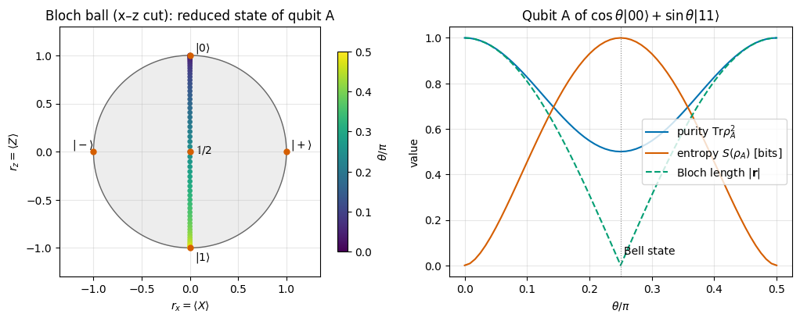
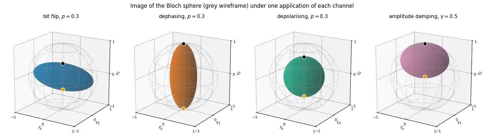
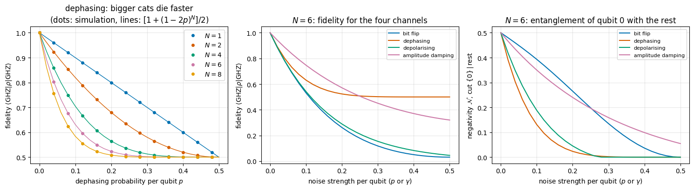
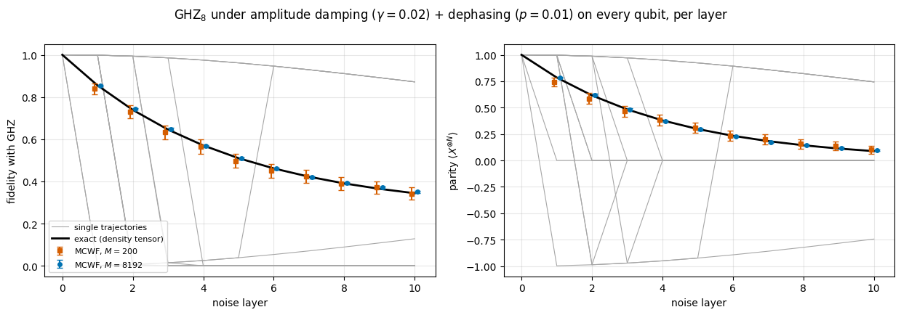
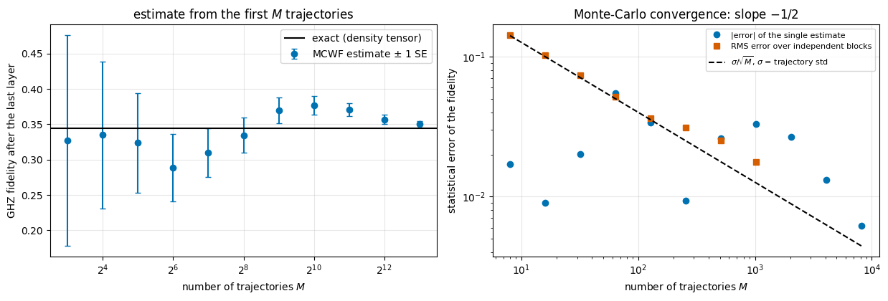
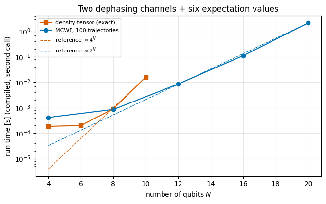

Quantum Many-Body Simulation — Chapter 3 — The matrix-free engine
1. Introduction and motivation
Up to now every state in these notes was a state vector\(|\psi\rangle\): a list of \(2^N\) complex amplitudes that evolves by the Schrödinger equation. That description assumes two things that are never exactly true in a laboratory:
We know which state was prepared. Real sources are imperfect. An oven, a laser pulse with fluctuating intensity, or a qubit that was reset with 98 % success all produce this state sometimes and that state at other times.
The system is isolated. A superconducting qubit leaks microwave photons into its wiring (energy relaxation, time scale \(T_1\)); fluctuating magnetic fields scramble the phase of a trapped-ion qubit (dephasing, time scale \(T_2\)). The qubits become entangled with an environment that we do not track.
In both situations no single state vector describes the system, and quantum mechanics needs a more general object: the density operator (density matrix) \(\rho\). Noise then acts on \(\rho\) through a quantum channel, a class of maps that contains the unitaries as a special case (textbook treatments: Nielsen & Chuang, Ch. 8; Preskill, Ch. 3; Breuer and Petruccione 2002). This is the language of every experimental paper on quantum hardware: gate fidelities, \(T_1\)/\(T_2\) times, “depolarising error per gate”, error-correction thresholds. It is also the language needed for a many-body question of great practical importance, the rate at which the entanglement of a large state decays. Trapped-ion GHZ states of up to 14 qubits were prepared, and their coherence, measured for up to 8 ions, decayed much faster than that of a single qubit, at a rate growing as \(N^2\), in agreement with a model of correlated Gaussian phase noise acting on all ions (Monz et al., 2011). We shall simulate the simpler, independent version of the same mechanism, which already gives a decay \(N\) times faster than a single qubit’s, and explain in §10.1 where the extra factor \(N\) of “superdecoherence” comes from.
Road map.
§2–§4: what a mixed state is. Two origins, ignorance (ensembles) and entanglement (subsystems), one object \(\rho\). Purity, entropy, and the Bloch ball.
§5: the numerical representation. In the spirit of notebook 05 we store \(\rho\) not as a \(2^N\times2^N\) matrix but as a density tensor of rank \(2N\), one “ket” axis and one “bra” axis per qubit.
§6: unitary evolution \(\rho\to U\rho U^\dagger\) = “\(U\) on the ket axes, \(U^*\) on the bra axes”.
§7–§8: quantum channels and their Kraus form \(\rho\to\sum_m K_m\rho K_m^\dagger\), applied by one einsum that sums over all Kraus branches.
§9: the channel zoo (bit flip, phase flip/dephasing, depolarising, amplitude damping, phase damping) and what each does to the Bloch sphere; decay of purity, entropy and fidelity under repeated noise.
§10: GHZ states under local noise: fragile coherence, robust classical correlations, decay of entanglement.
§11: the stochastic unravelling: simulate the same channel on pure states by randomly choosing one Kraus branch per trajectory. We prove that the trajectory average reproduces the channel exactly, parallelise over trajectories with jax.vmap, and measure the \(1/\sqrt{M}\) statistical error.
§12: cost. Memory \(4^N\) (density tensor) against \(2^N\) (trajectories), with measured timings.
What you will learn
Physics
The situations that require a density operator instead of a state vector; the density operator, its three defining properties, purity and von Neumann entropy.
That a subsystem of an entangled pure state is mixed, and that this is how an environment produces noise.
The standard single-qubit noise channels, their Kraus operators and their geometric action on the Bloch ball.
Why macroscopic superpositions (GHZ states) decohere \(N\) times faster in rate than single qubits, while their classical correlations survive.
Numerical methods
The density tensor of rank \(2N\) and the contractions that implement \(U\rho U^\dagger\), \(\sum_m K_m\rho K_m^\dagger\), partial traces and expectation values.
The quantum-trajectory (Monte-Carlo wave-function) unravelling of a channel, its proof of correctness, its statistical error and its cost.
Memory/time trade-off: deterministic \(O(4^N)\) against stochastic \(O(M\,2^N)\).
Implementation practice
Writing einsum strings by hand for small \(N\), validating against dense kron matrices, then generalising programmatically.
jax.vmap over noise strengths and over trajectories, lax.scan over noise layers, explicit PRNG keys, lax.map for memory-bounded batching.
Statistical validation: comparing a Monte-Carlo estimate with an exact number in units of its standard error.
06 — States, observables, entanglement: GHZ states, reduced density matrices rdm, purity, von Neumann entropy. There \(\rho_A\) appeared as a tool to quantify entanglement; here density operators become the state of the system itself.
Configuration
Every notebook of this course starts with the same cell. Choose where to run (DEVICE) and the floating-point precision (PRECISION): "double" = float64/complex128 (default, recommended for physics), "single" = float32/complex64 (half the memory, faster on consumer GPUs, but watch the round-off). All code below derives its dtypes from RDTYPE/CDTYPE and its check tolerances from TOL, so nothing else needs to change.
Code
# ==============================================================================# CONFIGURATION -- adapt to your hardware, then run the notebook top to bottom# ==============================================================================DEVICE ="auto"# "auto": use a GPU if JAX finds one, else CPU | "cpu" | "gpu"PRECISION ="double"# "double": float64/complex128 | "single": float32/complex64import osif DEVICE =="cpu": os.environ["JAX_PLATFORMS"] ="cpu"# must be set BEFORE jax is importedimport stringfrom functools import partialimport mathimport numpy as npimport jaximport jax.numpy as jnpfrom jax import lax# Precision is configurable: "double" = float64/complex128 (default; needed for long time evolutions and# tight validation), "single" = float32/complex64 (half the memory, faster on consumer GPUs).# In a notebook PRECISION is defined in the Configuration cell; for this module use the env var QE_PRECISION.PRECISION =globals().get("PRECISION", os.environ.get("QE_PRECISION", "double"))jax.config.update("jax_enable_x64", PRECISION =="double")RDTYPE = jnp.float64 if PRECISION =="double"else jnp.float32 # real dtypeCDTYPE = jnp.complex128 if PRECISION =="double"else jnp.complex64 # complex dtype of all states/operatorsTOL =1e-10if PRECISION =="double"else1e-4# tolerance for sanity checks (asserts)_LETTERS = string.ascii_letters # the 52 einsum index labels a-z, A-Zimport timeimport matplotlib.pyplot as pltif DEVICE =="gpu"and jax.default_backend() =="cpu":print("WARNING: DEVICE='gpu' requested but JAX found no GPU -- running on CPU.")print(f"JAX {jax.__version__} | backend: {jax.default_backend()} | devices: {jax.devices()}")print(f"precision: {PRECISION} -> real {RDTYPE.__name__}, complex {CDTYPE.__name__}, check tolerance TOL={TOL:g}")
JAX 0.11.0 | backend: cpu | devices: [CpuDevice(id=0)]
precision: double -> real float64, complex complex128, check tolerance TOL=1e-10
Engine recap: what we bring from earlier notebooks
The folded cell below contains the primitives derived in notebooks 05 and 06 that this notebook reuses: Pauli matrices and elementary gates, apply_gate (a \(k\)-qubit operator acting on a tensor through one einsum), state constructors, the pure-state reduced density matrix rdm, Pauli-string expectation values, purity, von_neumann_entropy, fidelity_pure and Haar-random states/unitaries for testing. Everything new is derived below before its final engine version is shown.
Engine recap — the simulator primitives used in this notebook (click to expand)
# ==============================================================================# ENGINE RECAP: the functions of quantum_engine.py (SmoQ.jax) used in this notebook.# Each one is derived, with its mathematics and an independent check, in notebook 08b# (Chapter 3), 'Building the quantum simulator engine'.# States are rank-N tensors of shape (2,)*N; every operator acts through ONE einsum.# ==============================================================================# ----------------------------------------------------------------------------# 1. Elementary matrices: Paulis, Clifford generators, rotations# ----------------------------------------------------------------------------I2 = jnp.eye(2, dtype=CDTYPE)X = jnp.array([[0, 1], [1, 0]], dtype=CDTYPE)Y = jnp.array([[0, -1j], [1j, 0]], dtype=CDTYPE)Z = jnp.array([[1, 0], [0, -1]], dtype=CDTYPE)H = jnp.array([[1, 1], [1, -1]], dtype=CDTYPE) / jnp.sqrt(2.0) # Hadamard: Z-basis <-> X-basisP0 = jnp.array([[1, 0], [0, 0]], dtype=CDTYPE) # projector |0><0|P1 = jnp.array([[0, 0], [0, 1]], dtype=CDTYPE) # projector |1><1|PAULI = {"I": I2, "X": X, "Y": Y, "Z": Z}CNOT = jnp.array([[1, 0, 0, 0], [0, 1, 0, 0], [0, 0, 0, 1], [0, 0, 1, 0]], dtype=CDTYPE)# ----------------------------------------------------------------------------# 2. THE core primitive: a k-qubit operator acting on a tensor through ONE einsum# ----------------------------------------------------------------------------def apply_gate(psi, U, qubits):"""Apply a k-qubit operator U to the axes `qubits` of the tensor `psi`. MATH ---- One qubit (k=1), target q: psi'[s_0,..,a,..,s_{N-1}] = sum_b U[a,b] psi[s_0,..,b,..,s_{N-1}] Two qubits (k=2), targets (q1,q2); the 4x4 matrix is reshaped to U[a1,a2,b1,b2]: psi'[.., a1, .., a2, ..] = sum_{b1,b2} U[a1,a2,b1,b2] psi[.., b1, .., b2, ..] This IS the action of (1 x .. x U x .. x 1) -- written without ever building it. EINSUM TRANSLATION (generated automatically below) ------------------ N=3, q=1 : "db,abc->adc" d = new (output) index of qubit 1 N=4, q=(1,3) : "efbd,abcd->aecf" e,f = new indices of qubits 1 and 3 Recipe: label the axes of psi with letters a,b,c,...; give every target qubit a NEW letter (the next unused ones); U carries (new letters)+(old letters of the targets); the output is psi's labels with the target letters replaced by the new ones. IMPLEMENTATION NOTES -------------------- * reshape of U: (2^k,2^k) -> (2,)*2k. Row index = (a1..ak), column = (b1..bk), and the FIRST qubit in `qubits` is the most significant bit of the small matrix, i.e. it corresponds to the LEFT factor of kron(A,B). * `qubits` may be any distinct axes in any order: non-neighbouring gates cost the same. * U need not be unitary: projectors, Kraus operators and Hamiltonian terms reuse this. * psi may be ANY tensor with those axes of size 2: a state (rank N), a density tensor (rank 2N: ket axes 0..N-1, bra axes N..2N-1), ... COST O(2^k * 2^N) operations, O(2^N) memory (dense matrix: O(4^N) both). JAX `qubits` must be static Python ints (they define the einsum string); psi and U are traced, so the function can sit inside jit / grad / vmap / scan. """ qubits =tuple(int(q) for q in qubits) k, n =len(qubits), psi.ndim U = jnp.asarray(U, dtype=psi.dtype).reshape((2,) * (2* k)) # matrix -> rank-2k tensor inp =list(_LETTERS[:n]) # labels of psi's axes new = _LETTERS[n:n + k] # fresh labels for the outputs out = inp.copy()for a, q inzip(new, qubits): out[q] = a # target axes get the new labels sub =f"{''.join(new)}{''.join(inp[q] for q in qubits)},{''.join(inp)}->{''.join(out)}"return jnp.einsum(sub, U, psi)# ----------------------------------------------------------------------------# 3. State preparation# ----------------------------------------------------------------------------_KETS = {"0": [1, 0], "1": [0, 1], "+": [1, 1], "-": [1, -1], "r": [1, 1j], "l": [1, -1j]}def product_state(spec):"""Product state from a string, one character per qubit: product_state('01+-') = |0>|1>|+>|->. ('r','l' = the +1/-1 eigenstates of Y.) MATH psi[s_0,...,s_{N-1}] = v0[s_0] v1[s_1] ... v_{N-1}[s_{N-1}] EINSUM an outer product = einsum with NO summed index: "a,b,c->abc". A product state needs only 2N numbers; entanglement is what makes all 2^N necessary. """ vecs = [jnp.array(_KETS[c], dtype=CDTYPE) / jnp.linalg.norm(jnp.array(_KETS[c], dtype=CDTYPE))for c in spec] n =len(vecs) sub =",".join(_LETTERS[i] for i inrange(n)) +"->"+ _LETTERS[:n]return jnp.einsum(sub, *vecs)def basis_state(bits):"""Computational basis state |b_0 b_1 ... b_{N-1}> from a list of bits.""" bits =tuple(int(b) for b in bits)return jnp.zeros((2,) *len(bits), dtype=CDTYPE).at[bits].set(1.0)def ghz_state(N):"""GHZ state (|0...0> + |1...1>)/sqrt(2): two non-zero entries of the rank-N tensor.""" psi = jnp.zeros((2,) * N, dtype=CDTYPE)return psi.at[(0,) * N].set(1/ jnp.sqrt(2.0)).at[(1,) * N].set(1/ jnp.sqrt(2.0))def bell_state(kind="phi+"):"""The four Bell states as (2,2) tensors: phi+- = (|00> +- |11>)/sqrt2, psi+- = (|01> +- |10>)/sqrt2.""" a =1/ np.sqrt(2) v = {"phi+": [a, 0, 0, a], "phi-": [a, 0, 0, -a], "psi+": [0, a, a, 0], "psi-": [0, a, -a, 0]}[kind]return jnp.array(v, dtype=CDTYPE).reshape(2, 2)def haar_state(key, N):"""Haar-random pure state: a complex Gaussian vector, normalised. (The Gaussian measure is unitarily invariant, so the direction is uniformly distributed.) `key` is an explicit JAX PRNG key -- same key, same state: reproducible science.""" k1, k2 = jax.random.split(key) v = jax.random.normal(k1, (2,) * N) +1j* jax.random.normal(k2, (2,) * N)return (v / jnp.linalg.norm(v)).astype(CDTYPE)# ----------------------------------------------------------------------------# 4. Reduced density matrices & observables (matrix-free)# ----------------------------------------------------------------------------def rdm(psi, keep):"""Reduced density matrix of the qubits `keep` from a PURE state: rho_A = Tr_B |psi><psi|. MATH rho_A[a, a'] = sum_{b} psi[a, b] psi^*[a', b] (a: indices of A, b: of the rest B) EINSUM TRANSLATION N=3, keep=(0,): "abc,Abc->aA" with operands psi, psi^* * letters of B (b,c) appear in BOTH operands and not in the output -> summed = traced out * the kept axis gets a different letter in the second operand -> stays open (a and A) The full |psi><psi| (4^N numbers) is never formed; cost O(2^N 2^|A|). Returns a (2^|A|, 2^|A|) matrix with row/column order following `keep`. """ keep =tuple(int(q) for q in keep) n, k = psi.ndim, len(keep) a =list(_LETTERS[:n]) b = a.copy()for new, q inzip(_LETTERS[n:n + k], keep): b[q] = new sub =f"{''.join(a)},{''.join(b)}->{''.join(a[q] for q in keep)}{''.join(b[q] for q in keep)}"return jnp.einsum(sub, psi, jnp.conj(psi)).reshape(2** k, 2** k)def apply_pauli_string(psi, ops):"""Apply a Pauli string P = P_0 x P_1 x ... to psi. `ops` is a dict {qubit: 'X'|'Y'|'Z'} or a string like 'XIZY' (one letter per qubit; 'I' skipped). N single-qubit einsums -- cost O(N 2^N) -- instead of one 2^N x 2^N matrix."""ifisinstance(ops, str): ops = {q: p for q, p inenumerate(ops) if p !="I"}for q, p in ops.items(): psi = apply_gate(psi, PAULI[p], [q])return psidef expect_pauli_string(psi, ops):"""<psi|P|psi> = <psi | (P psi)> : apply the string, then ONE inner product (jnp.vdot conjugates its first argument). Works for strings of any weight, e.g. the N-body correlator <X X ... X>."""return jnp.real(jnp.vdot(psi, apply_pauli_string(psi, ops)))# ----------------------------------------------------------------------------# 5. State characteristics: entropies, fidelity, negativity# ----------------------------------------------------------------------------def purity(rho_mat):"""Tr(rho^2): 1 for pure states, 1/d for the maximally mixed state in dimension d."""return jnp.real(jnp.trace(rho_mat @ rho_mat))def von_neumann_entropy(rho_mat, base=2.0):"""S(rho) = -Tr(rho log rho) = -sum_i lambda_i log lambda_i (in bits for base=2). Eigenvalues are clipped at 1e-16 because 0*log(0) := 0 but log(0) = -inf numerically.""" lam = jnp.clip(jnp.linalg.eigvalsh(rho_mat), 1e-16, None)return-jnp.sum(lam * jnp.log(lam)) / jnp.log(base)def fidelity_pure(psi, phi):"""F = |<psi|phi>|^2 between two pure states."""return jnp.abs(jnp.vdot(psi, phi)) **2# ----------------------------------------------------------------------------# 12. Random unitaries, Clifford group, brick-wall circuits# ----------------------------------------------------------------------------def haar_unitary(key, d):"""Haar-random d x d unitary (Mezzadri's recipe): QR-decompose a complex Ginibre matrix and fix the phases of R's diagonal -- without the phase fix the distribution is NOT Haar.""" k1, k2 = jax.random.split(key) G = (jax.random.normal(k1, (d, d)) +1j* jax.random.normal(k2, (d, d))) / jnp.sqrt(2.0) Q, R = jnp.linalg.qr(G) ph = jnp.diagonal(R) / jnp.abs(jnp.diagonal(R))return Q * ph[None, :]
Code
# ==============================================================================# PLOTTING DEFAULTS -- a colour-blind-friendly palette (Okabe-Ito) used in all figures# ==============================================================================COLORS = ["#0072B2", "#D55E00", "#009E73", "#CC79A7", "#E69F00", "#56B4E9", "#000000"]plt.rcParams.update({"axes.grid": True, "grid.alpha": 0.3, "font.size": 10})
2. Statistical ensembles and the density operator
2.1 The density operator of an ensemble
Suppose a source emits the state \(|\psi_1\rangle\) with probability \(p_1\), \(|\psi_2\rangle\) with probability \(p_2\), and so on (\(p_k\ge 0\), \(\sum_k p_k=1\)). The states \(|\psi_k\rangle\) are normalised but need not be orthogonal. We measure an observable \(O\) many times. In the runs where \(|\psi_k\rangle\) was emitted, the mean outcome is \(\langle\psi_k|O|\psi_k\rangle\); averaging over the runs gives
Two different averages are involved: the quantum one inside each \(\langle\psi_k|O|\psi_k\rangle\) and the classical one over \(k\). Both can be packed into a single object. Insert a basis, \(\langle\psi|O|\psi\rangle=\sum_{ij}\psi_i^*O_{ij}\psi_j =\sum_{ij}O_{ij}\,(\psi_j\psi_i^*)=\mathrm{Tr}\big(O\,|\psi\rangle\langle\psi|\big)\), and use the linearity of the trace:
\(\rho\) is the density operator; in a basis it is the density matrix\(\rho_{ij}=\sum_k p_k\,\psi^{(k)}_i\psi^{(k)*}_j\). Every prediction of quantum mechanics for the ensemble (means, and also outcome probabilities, because the probability of outcome \(m\) is the expectation value of the projector \(P_m\)) depends on the ensemble only through \(\rho\).
Three defining properties. From Eq. (1):
property
reason
meaning
\(\rho=\rho^\dagger\) (Hermitian)
each \(\vert\psi\rangle\langle\psi\vert\) is Hermitian, \(p_k\) real
real expectation values
\(\mathrm{Tr}\rho=1\)
\(\mathrm{Tr}\vert\psi_k\rangle\langle\psi_k\vert=\langle\psi_k\vert\psi_k\rangle=1\) and \(\sum_k p_k=1\)
probabilities sum to one
\(\rho\ge 0\) (no negative eigenvalues)
\(\langle\phi\vert\rho\vert\phi\rangle=\sum_k p_k\vert\langle\phi\vert\psi_k\rangle\vert^2\ge0\) for every \(\vert\phi\rangle\)
probabilities are non-negative
Conversely, any matrix with these three properties is a legitimate state: diagonalise it, \(\rho=\sum_i\lambda_i|i\rangle\langle i|\), and read the eigenvalues \(\lambda_i\ge0\), \(\sum_i\lambda_i=1\) as the probabilities of an ensemble of orthonormal eigenvectors.
Pure state: a single term, \(\rho=|\psi\rangle\langle\psi|\). Then \(\rho^2=\rho\).
Mixed state: anything else.
2.2 Superposition and mixture compared
Compare the superposition \(|+\rangle=(|0\rangle+|1\rangle)/\sqrt2\) with the 50/50 mixture of \(|0\rangle\) and \(|1\rangle\):
The diagonal entries (populations) agree: a \(Z\) measurement gives \(\pm1\) with probability ½ in both cases. The difference sits in the off-diagonal entries (coherences): \(\langle X\rangle=\mathrm{Tr}(\rho X)=2\,\mathrm{Re}\,\rho_{01}\) is \(1\) for the superposition and \(0\) for the mixture. Decoherence, the main character of this notebook, is the process that turns the first matrix into the second.
From formula to code. Eq. (1) is a weighted sum of outer products. With the probabilities in an array p[k] and the states stacked in kets[k, i], it is the einsum "k,ki,kj->ij" with operands p, kets, kets.conj(): the letter k appears in all inputs and not in the output, so it is summed.
Code
# ==============================================================================# STEP 1: density matrix of an ensemble, rho = sum_k p_k |psi_k><psi_k| (one qubit)# ==============================================================================def dm_from_ensemble(probs, kets):"""Density matrix of a statistical ensemble. MATH rho_ij = sum_k p_k psi^(k)_i conj(psi^(k)_j) (Eq. 1) IMPLEMENTATION einsum "k,ki,kj->ij" with operands (p, kets, conj(kets)); `kets` has shape (K, d). """ probs = jnp.asarray(probs, dtype=RDTYPE) kets = jnp.asarray(kets, dtype=CDTYPE)return jnp.einsum("k,ki,kj->ij", probs.astype(CDTYPE), kets, jnp.conj(kets))s2 =1/ np.sqrt(2)ket0, ket1 = np.array([1, 0]), np.array([0, 1])ketp, ketm = s2 * (ket0 + ket1), s2 * (ket0 - ket1)rho_plus = dm_from_ensemble([1.0], [ketp]) # pure superposition |+>rho_mix = dm_from_ensemble([0.5, 0.5], [ket0, ket1]) # 50/50 mixture of |0> and |1>for name, rho in [("|+><+|", rho_plus), ("mixture of |0>,|1>", rho_mix)]: ex, ez = (float(jnp.real(jnp.trace(rho @ P))) for P in (X, Z))print(f"{name:20s} <X> = {ex:+.3f} <Z> = {ez:+.3f} Tr rho = {float(jnp.real(jnp.trace(rho))):.3f}"f" eigenvalues = {np.round(np.linalg.eigvalsh(np.asarray(rho)), 6)}")# --- the ensemble behind a mixed state is NOT unique -----------------------------------------------rho_mix_pm = dm_from_ensemble([0.5, 0.5], [ketp, ketm]) # 50/50 mixture of |+> and |->err =float(jnp.max(jnp.abs(rho_mix - rho_mix_pm)))print(f"\n50/50 {{|0>,|1>}} versus 50/50 {{|+>,|->}}: max |difference| = {err:.2e}")assert err < TOL
Reading the output. Both states give \(\langle Z\rangle=0\), but only the superposition has \(\langle X\rangle=1\). The eigenvalues tell the two apart without reference to any observable: \((0,1)\) for the pure state (one state with certainty), \((\tfrac12,\tfrac12)\) for the mixture.
The last line shows that a fair coin deciding between \(|0\rangle\) and \(|1\rangle\) and a fair coin deciding between \(|+\rangle\) and \(|-\rangle\) give the same\(\rho=\mathbb 1/2\). Since all predictions follow from \(\rho\), no experiment can distinguish these two preparations. All measurable consequences of a preparation are contained in its density operator; the particular ensemble used to build it has none of its own.
The general rule behind this (quoted without proof; Nielsen & Chuang, Theorem 2.6, “unitary freedom in the ensemble for density matrices”) is stated with the unnormalised vectors \(|\tilde\psi_k\rangle=\sqrt{p_k}\,|\psi_k\rangle\), so that \(\rho=\sum_k|\tilde\psi_k\rangle\langle\tilde\psi_k|\): after padding the shorter list with zero vectors, two ensembles give the same \(\rho\) if and only if \(|\tilde\psi_m\rangle=\sum_nu_{mn}|\tilde\phi_n\rangle\) for some unitary matrix \(u\). Our two ensembles are exactly of this kind — \(\tfrac1{\sqrt2}|\pm\rangle\) are the Hadamard combinations of \(\tfrac1{\sqrt2}|0\rangle\) and \(\tfrac1{\sqrt2}|1\rangle\). The same structure will return in §9.4 and §11.3, where the same channel will admit different Kraus representations and hence different stochastic simulations.
3. Purity, entropy and the Bloch ball
3.1 Purity and von Neumann entropy
With the eigenvalues \(\lambda_i\) of \(\rho\) (a probability distribution) two scalar measures of mixedness are standard:
Purity\(\gamma=\mathrm{Tr}\rho^2=\sum_i\lambda_i^2\). It equals 1 exactly for pure states (\(\lambda=(1,0,\dots)\)) and takes its minimum \(1/d\) for the maximally mixed state\(\rho=\mathbb 1/d\) in dimension \(d=2^N\).
Von Neumann entropy\(S(\rho)=-\mathrm{Tr}\,\rho\log_2\rho=-\sum_i\lambda_i\log_2\lambda_i\), the Shannon entropy of the eigenvalues, in bits. \(S=0\) for pure states and \(S=N\) bits for the maximally mixed state of \(N\) qubits.
Both were introduced in notebook 06 for reduced states; the engine functions purity and von_neumann_entropy take any density matrix.
3.2 The Bloch vector of a mixed qubit
Any Hermitian \(2\times2\) matrix is a real combination of \(\mathbb 1,X,Y,Z\). With \(\mathrm{Tr}\rho=1\) fixed,
Because \(\mathrm{Tr}(\sigma_a\sigma_b)=2\delta_{ab}\) and \(\mathrm{Tr}\,\sigma_a=0\), the coefficients are the expectation values: \(r_a=\mathrm{Tr}(\rho\,\sigma_a)=\langle\sigma_a\rangle\). This Bloch vector\(\mathbf r\) is the one you know from a single spin-1/2, but now its length is free. The eigenvalues of the matrix above are \(\lambda_\pm=\tfrac12(1\pm|\mathbf r|)\) (trace 1, determinant \(\tfrac14(1-|\mathbf r|^2)\)), hence
Pure states live on the surface of the Bloch sphere, mixed states inside the ball, the maximally mixed state \(\mathbb 1/2\) at the centre. Populations are encoded in \(r_z\), coherences in \(r_x,r_y\). A noise process is then a map of the ball into itself, and in §9 we draw it.
Code
# ==============================================================================# STEP 2: Bloch vector of a single-qubit density matrix# ==============================================================================def bloch_vector(rho):"""Bloch vector r = (Tr rho X, Tr rho Y, Tr rho Z) of a 2x2 density matrix. MATH rho = (1 + r.sigma)/2 <=> r_a = Tr(rho sigma_a); purity = (1 + |r|^2)/2. """return jnp.real(jnp.stack([jnp.trace(rho @ P) for P in (X, Y, Z)]))for name, rho in [("|+><+|", rho_plus), ("mixture", rho_mix)]: r = bloch_vector(rho) gam, gam_bloch =float(purity(rho)), float(0.5* (1+ jnp.sum(r **2)))print(f"{name:10s} r = {np.round(np.asarray(r), 6)} purity Tr rho^2 = {gam:.3f} (1+|r|^2)/2 = {gam_bloch:.3f}"f" S = {float(von_neumann_entropy(rho)):.3f} bit")assertabs(gam - gam_bloch) < TOL
|+><+| r = [1. 0. 0.] purity Tr rho^2 = 1.000 (1+|r|^2)/2 = 1.000 S = 0.000 bit
mixture r = [0. 0. 0.] purity Tr rho^2 = 0.500 (1+|r|^2)/2 = 0.500 S = 1.000 bit
The superposition sits on the sphere at \(\mathbf r=(1,0,0)\) with purity 1 and zero entropy; the mixture sits at the centre with purity ½ and one full bit of entropy (one fair coin toss of ignorance).
4. The second origin of mixedness: entanglement
There is a second, more fundamental way to obtain a mixed state, without any coin toss. Let qubits \(A\) and \(B\) be in the pure state \(|\psi\rangle=\sum_{ab}\psi_{ab}|a\rangle|b\rangle\), and suppose we can only measure \(A\). For an observable \(O_A\otimes\mathbb 1_B\),
This is the reduced density matrix (partial trace) of notebook 06, in einsum form "ab,Ab->aA". For a product state \(\psi_{ab}=\alpha_a\beta_b\) it gives the pure state \(\alpha_a\alpha^*_{a'}\). For the Bell state \((|00\rangle+|11\rangle)/\sqrt2\) it gives \(\rho_A=\mathbb 1/2\): the whole is perfectly known, yet the part is maximally random. No classical ignorance is involved here; the mixedness of \(A\) comes entirely from its entanglement with \(B\).
This is exactly how an environment acts on a system: \(B\) is the electromagnetic field, the substrate, the rest of the apparatus. They interact, they become entangled, we do not (cannot) measure \(B\), and the system \(A\) alone is left in a mixed state. We make this precise in §7.
Experiment. The family \(|\psi(\theta)\rangle=\cos\theta|00\rangle+\sin\theta|11\rangle\) interpolates between a product state (\(\theta=0\)) and a Bell state (\(\theta=\pi/4\)). By hand, \(\rho_A=\mathrm{diag}(\cos^2\theta,\sin^2\theta)\), so \(\mathbf r=(0,0,\cos2\theta)\) and \(\gamma=\cos^4\theta+\sin^4\theta=1-\tfrac12\sin^22\theta\). We evaluate the whole family in one call with jax.vmap, which turns a function written for one \(\theta\) into a function of an array of \(\theta\)s (see notebook 01).
Code
# ==============================================================================# STEP 3: a qubit becomes mixed by getting entangled -- |psi> = cos(t)|00> + sin(t)|11># ==============================================================================def partially_entangled_pair(theta):"""cos(theta)|00> + sin(theta)|11> as a (2,2) tensor: product state at 0, Bell state at pi/4."""return jnp.cos(theta) * basis_state([0, 0]) + jnp.sin(theta) * basis_state([1, 1])def qubit_A_diagnostics(theta): rho_A = rdm(partially_entangled_pair(theta), [0]) # einsum "ab,Ab->aA"return bloch_vector(rho_A), purity(rho_A), von_neumann_entropy(rho_A)thetas = jnp.linspace(0.0, jnp.pi /2, 61)r_A, pur_A, ent_A = jax.jit(jax.vmap(qubit_A_diagnostics))(thetas) # all 61 angles in one callerr =float(jnp.max(jnp.abs(pur_A - (1-0.5* jnp.sin(2* thetas) **2))))print(f"purity versus analytic 1 - sin^2(2 theta)/2 : max error = {err:.2e}")assert err <10* TOLprint(f"Bell state (theta = pi/4): rho_A =\n{np.round(np.asarray(rdm(partially_entangled_pair(jnp.pi /4), [0])), 6)}")fig, (ax1, ax2) = plt.subplots(1, 2, figsize=(10.5, 4.2))# --- left: x-z cross-section of the Bloch ball ------------------------------------------------------phi = np.linspace(0, 2* np.pi, 200)ax1.plot(np.cos(phi), np.sin(phi), color="0.4", lw=1)ax1.fill(np.cos(phi), np.sin(phi), color="0.93")sc = ax1.scatter(np.asarray(r_A[:, 0]), np.asarray(r_A[:, 2]), c=np.asarray(thetas) / np.pi, cmap="viridis", s=14, zorder=3)fig.colorbar(sc, ax=ax1, label=r"$\theta/\pi$", shrink=0.8)for (x, z, lab, dx, dz) in [(0, 1, r"$|0\rangle$", 0.05, 0.05), (0, -1, r"$|1\rangle$", 0.05, -0.13), (1, 0, r"$|+\rangle$", 0.04, 0.04), (-1, 0, r"$|-\rangle$", -0.22, 0.04), (0, 0, r"$\mathbb{1}/2$", 0.06, -0.02)]: ax1.plot([x], [z], "o", color=COLORS[1], ms=5, zorder=4) ax1.text(x + dx, z + dz, lab)ax1.set_aspect("equal"); ax1.set_xlim(-1.35, 1.35); ax1.set_ylim(-1.3, 1.3)ax1.set_xlabel(r"$r_x=\langle X\rangle$"); ax1.set_ylabel(r"$r_z=\langle Z\rangle$")ax1.set_title("Bloch ball (x–z cut): reduced state of qubit A")# --- right: purity and entropy -----------------------------------------------------------------------ax2.plot(thetas / np.pi, pur_A, color=COLORS[0], label=r"purity $\mathrm{Tr}\rho_A^2$")ax2.plot(thetas / np.pi, ent_A, color=COLORS[1], label=r"entropy $S(\rho_A)$ [bits]")ax2.plot(thetas / np.pi, jnp.abs(r_A[:, 2]), color=COLORS[2], ls="--", label=r"Bloch length $|\mathbf{r}|$")ax2.axvline(0.25, color="0.5", lw=0.8, ls=":"); ax2.text(0.255, 0.05, "Bell state")ax2.set_xlabel(r"$\theta/\pi$"); ax2.set_ylabel("value"); ax2.legend(loc="center right")ax2.set_title(r"Qubit A of $\cos\theta|00\rangle+\sin\theta|11\rangle$")fig.tight_layout(); plt.show()
purity versus analytic 1 - sin^2(2 theta)/2 : max error = 3.33e-16
Bell state (theta = pi/4): rho_A =
[[0.5+0.j 0. +0.j]
[0. +0.j 0.5+0.j]]

Interpretation. As \(\theta\) grows from 0 the reduced state of qubit \(A\) leaves the north pole \(|0\rangle\) and travels through the interior of the ball along the \(z\)-axis (left panel; colour encodes \(\theta\)), reaching the centre exactly at the Bell state, and continues to the south pole \(|1\rangle\) at \(\theta=\pi/2\) where the pair is a product state again. The right panel shows purity dropping from 1 to ½ while the entropy rises from 0 to 1 bit, which is, as in notebook 06, the entanglement entropy of the pair. For a pure state of the pair, the depth of qubit \(A\)’s Bloch vector inside the ball (\(1-|\mathbf r|\)) is a direct measure of its entanglement with \(B\).
Physics insight. A mixed state can always be read in both ways. Given \(\rho_A=\sum_i\lambda_i|i\rangle\langle i|\) one can construct a pure state \(\sum_i\sqrt{\lambda_i}\,|i\rangle_A|i\rangle_B\) of a larger system whose reduced state is \(\rho_A\) (a “purification”; it is the Schmidt decomposition of notebook 06 read backwards). Whether the randomness is “classical ignorance” or “entanglement with something we lost” cannot be decided by looking at \(A\) alone.
5. The density tensor: \(\rho\) as an array of rank \(2N\)
5.1 Definition
In notebook 05 the \(2^N\) amplitudes became a rank-\(N\) tensor \(\psi[s_0,\dots,s_{N-1}]\) with one axis per qubit, and a local operator became a contraction with one axis. We now do the same with \(\rho\). A matrix element of an \(N\)-qubit density operator carries a row bit string and a column bit string,
so the natural container is an array of shape \((2,)\times 2N\):
axes \(0,\dots,N-1\) are the ket axes (row index of the matrix), axis \(q\) belongs to qubit \(q\);
axes \(N,\dots,2N-1\) are the bra axes (column index), axis \(N+q\) belongs to qubit \(q\).
For a pure state \(\rho[s;s']=\psi[s]\,\psi^*[s']\): an outer product, i.e. an einsum in which nothing is summed. For \(N=2\) the string is "ab,AB->abAB" with operands \(\psi,\psi^*\). With C-ordering, reshaping the rank-\(2N\) tensor to \((2^N,2^N)\) gives back the textbook matrix, because the first \(N\) axes combine into the row index \(i=\sum_q s_q2^{N-1-q}\) and the last \(N\) into the column index. The matrix and the tensor are the same memory, viewed with two different shapes.
5.2 Trace, partial trace and expectation values in tensor form
Trace: \(\mathrm{Tr}\rho=\sum_s\rho[s;s]\). Give each bra axis the same letter as its ket axis and keep nothing: "abab->" for \(N=2\).
Partial trace: tie only the axes of the qubits we discard. Trace out qubit 1 of two: \(\rho_0[a,A]=\sum_b\rho[a,b;A,b]\), "abAb->aA". Trace out qubit 0: "abaB->bB". (For a pure state this reproduces rdm of notebook 06; for a mixed state there is no \(\psi\) to start from, and this is the only way.)
Local expectation value: \(\mathrm{Tr}(\rho\,O_q)\) with \(O\) acting on qubit \(q\). Only the reduced state of qubit \(q\) matters: \(\mathrm{Tr}(\rho\,O_q)=\sum_{aA}\rho_q[a,A]\,O[A,a]=\mathrm{Tr}(\rho_q O)\).
From formula to code. We build a two-qubit density tensor by hand, check the three contractions against the dense matrix, and build a genuinely mixed two-qubit state as a convex combination of two density tensors.
Code
# ==============================================================================# STEP 4: the density tensor by hand (N = 2) and its basic contractions# ==============================================================================key = jax.random.PRNGKey(7)psi = haar_state(key, 2) # a random pure 2-qubit state, shape (2,2)rho_t = jnp.einsum("ab,AB->abAB", psi, jnp.conj(psi)) # density TENSOR rho[a,b;A,B] = psi[a,b] psi*[A,B]v = psi.reshape(-1)rho_m = jnp.outer(v, jnp.conj(v)) # textbook density MATRIX |psi><psi|, shape (4,4)print("tensor shape", rho_t.shape, "| matrix shape", rho_m.shape)print(f"reshape(tensor) == matrix : max diff = {float(jnp.max(jnp.abs(rho_t.reshape(4, 4) - rho_m))):.1e}")# one element, spelled out: rho[s0,s1; t0,t1] sits at row 2*s0+s1, column 2*t0+t1 (C-order, qubit 0 = most significant bit)s0, s1, t0, t1 =1, 0, 0, 1assertabs(rho_t[s0, s1, t0, t1] - rho_m[2* s0 + s1, 2* t0 + t1]) < TOL# --- trace and partial traces --------------------------------------------------------------------------tr = jnp.einsum("abab->", rho_t)rho_q0 = jnp.einsum("abAb->aA", rho_t) # trace out qubit 1rho_q1 = jnp.einsum("abaB->bB", rho_t) # trace out qubit 0print(f"Tr rho = {float(jnp.real(tr)):.12f}")print(f"partial traces versus rdm(psi, .) of notebook 06: {float(jnp.max(jnp.abs(rho_q0 - rdm(psi, [0])))):.1e}, "f"{float(jnp.max(jnp.abs(rho_q1 - rdm(psi, [1])))):.1e}")# --- local expectation value: Tr(rho X_1) three ways -----------------------------------------------------e_tensor = jnp.real(jnp.einsum("abaB,Bb->", rho_t, X)) # sum_{a,b,B} rho[a,b;a,B] X[B,b]e_dense = jnp.real(jnp.trace(rho_m @ jnp.kron(I2, X))) # textbook: Tr(rho (1 x X))e_pure = jnp.real(jnp.vdot(psi, apply_gate(psi, X, [1]))) # <psi|X_1|psi>print(f"<X_1>: tensor {float(e_tensor):+.10f} | dense {float(e_dense):+.10f} | pure state {float(e_pure):+.10f}")assertabs(e_tensor - e_dense) < TOL andabs(e_tensor - e_pure) < TOL# --- a genuinely mixed 2-qubit state: 70% Bell state + 30% |01> ---------------------------------------------bell, k01 = bell_state("phi+"), basis_state([0, 1])rho_mixed =0.7* jnp.einsum("ab,AB->abAB", bell, bell.conj()) +0.3* jnp.einsum("ab,AB->abAB", k01, k01.conj())R = rho_mixed.reshape(4, 4)print(f"\nmixture: Tr = {float(jnp.real(jnp.trace(R))):.3f}, purity = {float(purity(R)):.3f} (= 0.7^2 + 0.3^2 = 0.58), "f"S = {float(von_neumann_entropy(R)):.4f} bit, eigenvalues = {np.round(np.linalg.eigvalsh(np.asarray(R)), 6)}")assertabs(float(purity(R)) -0.58) <1e3* TOL
All checks agree to machine precision. The mixture has eigenvalues \((0,0,0.3,0.7)\) because the two states we mixed happen to be orthogonal, so its purity is \(0.7^2+0.3^2\).
5.3 The engine versions
The general-\(N\) versions build the same strings programmatically, exactly as apply_gate did in notebook 05. Read them next to the by-hand strings above:
to_dm is the outer product (written with tensordot(axes=0), equivalent to "ab..,AB..->ab..AB..");
dm_matrix is the reshape \((2,)^{2N}\to(2^N,2^N)\);
rdm_dm labels the ket axes a,b,c,... and gives a bra axis a new letter if the qubit is kept and the same letter as its ket axis if it is traced out. A repeated letter within one operand that is absent from the output is a trace;
expect_local_dm is \(\mathrm{Tr}(\rho_AO)\) with the small reduced matrix; expect_pauli_string_dm evaluates \(\mathrm{Tr}(P\rho)\) for a Pauli string of any weight by applying the Paulis to the ket axes only (left multiplication, \((P\rho)[s;s']=\sum_tP[s,t]\rho[t;s']\)) and then tracing.
Code
# ==============================================================================# Functions of quantum_engine.py derived in this notebook# ==============================================================================# ----------------------------------------------------------------------------# 1. Elementary matrices: Paulis, Clifford generators, rotations# ----------------------------------------------------------------------------I2 = jnp.eye(2, dtype=CDTYPE)X = jnp.array([[0, 1], [1, 0]], dtype=CDTYPE)Y = jnp.array([[0, -1j], [1j, 0]], dtype=CDTYPE)Z = jnp.array([[1, 0], [0, -1]], dtype=CDTYPE)PAULI = {"I": I2, "X": X, "Y": Y, "Z": Z}# ----------------------------------------------------------------------------# 2. THE core primitive: a k-qubit operator acting on a tensor through ONE einsum# ----------------------------------------------------------------------------def apply_gate(psi, U, qubits):"""Apply a k-qubit operator U to the axes `qubits` of the tensor `psi`. MATH ---- One qubit (k=1), target q: psi'[s_0,..,a,..,s_{N-1}] = sum_b U[a,b] psi[s_0,..,b,..,s_{N-1}] Two qubits (k=2), targets (q1,q2); the 4x4 matrix is reshaped to U[a1,a2,b1,b2]: psi'[.., a1, .., a2, ..] = sum_{b1,b2} U[a1,a2,b1,b2] psi[.., b1, .., b2, ..] This IS the action of (1 x .. x U x .. x 1) -- written without ever building it. EINSUM TRANSLATION (generated automatically below) ------------------ N=3, q=1 : "db,abc->adc" d = new (output) index of qubit 1 N=4, q=(1,3) : "efbd,abcd->aecf" e,f = new indices of qubits 1 and 3 Recipe: label the axes of psi with letters a,b,c,...; give every target qubit a NEW letter (the next unused ones); U carries (new letters)+(old letters of the targets); the output is psi's labels with the target letters replaced by the new ones. IMPLEMENTATION NOTES -------------------- * reshape of U: (2^k,2^k) -> (2,)*2k. Row index = (a1..ak), column = (b1..bk), and the FIRST qubit in `qubits` is the most significant bit of the small matrix, i.e. it corresponds to the LEFT factor of kron(A,B). * `qubits` may be any distinct axes in any order: non-neighbouring gates cost the same. * U need not be unitary: projectors, Kraus operators and Hamiltonian terms reuse this. * psi may be ANY tensor with those axes of size 2: a state (rank N), a density tensor (rank 2N: ket axes 0..N-1, bra axes N..2N-1), ... COST O(2^k * 2^N) operations, O(2^N) memory (dense matrix: O(4^N) both). JAX `qubits` must be static Python ints (they define the einsum string); psi and U are traced, so the function can sit inside jit / grad / vmap / scan. """ qubits =tuple(int(q) for q in qubits) k, n =len(qubits), psi.ndim U = jnp.asarray(U, dtype=psi.dtype).reshape((2,) * (2* k)) # matrix -> rank-2k tensor inp =list(_LETTERS[:n]) # labels of psi's axes new = _LETTERS[n:n + k] # fresh labels for the outputs out = inp.copy()for a, q inzip(new, qubits): out[q] = a # target axes get the new labels sub =f"{''.join(new)}{''.join(inp[q] for q in qubits)},{''.join(inp)}->{''.join(out)}"return jnp.einsum(sub, U, psi)# ----------------------------------------------------------------------------# 3. State preparation# ----------------------------------------------------------------------------def to_dm(psi):"""Pure state -> density TENSOR rho[s..; s'..] = psi[s..] psi^*[s'..] (rank 2N). An outer product: einsum "ab,AB->abAB" -- here via the equivalent tensordot(axes=0)."""return jnp.tensordot(psi, jnp.conj(psi), axes=0)def dm_matrix(rho):"""View a rank-2N density tensor as an ordinary 2^N x 2^N matrix (a reshape, no copy of meaning).""" d =int(round(np.sqrt(rho.size)))return rho.reshape(d, d)# ----------------------------------------------------------------------------# 4. Reduced density matrices & observables (matrix-free)# ----------------------------------------------------------------------------def rdm_dm(rho, keep):"""Partial trace of a density TENSOR (rank 2N), keeping the qubits `keep`. MATH rho_A[a,a'] = sum_b rho[a,b ; a',b] EINSUM N=2, keep=(0,): "abAb->aA" -- the letter b is REPEATED inside one operand and absent from the output: that is a trace over that pair of axes. """ keep =tuple(int(q) for q in keep) N = rho.ndim //2 ket =list(_LETTERS[:N]) bra = [(_LETTERS[N + q] if q in keep else ket[q]) for q inrange(N)] sub =f"{''.join(ket)}{''.join(bra)}->{''.join(ket[q] for q in keep)}{''.join(bra[q] for q in keep)}"return jnp.einsum(sub, rho).reshape(2**len(keep), 2**len(keep))def expect_local_dm(rho, O, qubits):"""Tr(rho O_qubits) for a density tensor, via its reduced density matrix."""return jnp.real(jnp.trace(rdm_dm(rho, qubits) @ jnp.asarray(O, dtype=CDTYPE)))def apply_pauli_string(psi, ops):"""Apply a Pauli string P = P_0 x P_1 x ... to psi. `ops` is a dict {qubit: 'X'|'Y'|'Z'} or a string like 'XIZY' (one letter per qubit; 'I' skipped). N single-qubit einsums -- cost O(N 2^N) -- instead of one 2^N x 2^N matrix."""ifisinstance(ops, str): ops = {q: p for q, p inenumerate(ops) if p !="I"}for q, p in ops.items(): psi = apply_gate(psi, PAULI[p], [q])return psidef expect_pauli_string_dm(rho, ops):"""Tr(P rho): apply P to the KET axes only, then take the full trace."""return jnp.real(jnp.trace(dm_matrix(apply_pauli_string(rho, ops))))
Checkpoint. We need mixed test states. random_mixed_state mixes a few Haar-random pure states with random weights. For validation we also need the dense textbook operators of notebook 03: embed_1q builds \(\mathbb 1\otimes\dots\otimes O\otimes\dots\otimes\mathbb 1\) with a kron chain, and embed_2q embeds an arbitrary two-qubit matrix on any ordered pair of qubits by expanding it in Pauli products, \(U=\sum_{ij}c_{ij}\,\sigma_i\otimes\sigma_j\) with \(c_{ij}=\tfrac14\mathrm{Tr}[(\sigma_i\otimes\sigma_j)U]\). These dense \(2^N\times2^N\) matrices exist only to validate the tensor code on small \(N\).
Code
# ==============================================================================# VALIDATION TOOLS: random mixed states and dense (kron) embeddings -- small N only# ==============================================================================def random_mixed_state(key, N, rank=3):"""Random density tensor rho = sum_k w_k |phi_k><phi_k| with Haar-random |phi_k> and random weights w_k.""" kw, *ks = jax.random.split(key, rank +1) w = jax.random.uniform(kw, (rank,), dtype=RDTYPE) w = w / jnp.sum(w)returnsum(w[k] * to_dm(haar_state(ks[k], N)) for k inrange(rank))def kron_chain(mats):"""Dense Kronecker product mats[0] x mats[1] x ... (qubit 0 = leftmost factor).""" out = jnp.ones((1, 1), dtype=CDTYPE)for m in mats: out = jnp.kron(out, jnp.asarray(m, dtype=CDTYPE))return outdef embed_1q(O, q, N):"""Dense 2^N x 2^N matrix of the single-qubit operator O acting on qubit q."""return kron_chain([O if j == q else I2 for j inrange(N)])def embed_2q(U4, q1, q2, N):"""Dense embedding of a 4x4 matrix on the ORDERED pair (q1, q2), q1 = left kron factor of U4. MATH U4 = sum_ij c_ij (s_i x s_j), c_ij = Tr[(s_i x s_j) U4]/4 => U_full = sum_ij c_ij s_i^(q1) s_j^(q2). Works for non-neighbouring qubits and for q1 > q2, where a plain kron chain does not. """ paulis = [I2, X, Y, Z] out = jnp.zeros((2** N, 2** N), dtype=CDTYPE)for Pi in paulis:for Pj in paulis: c = jnp.trace(jnp.kron(Pi, Pj) @ U4) /4 out = out + c * embed_1q(Pi, q1, N) @ embed_1q(Pj, q2, N)return outdef check_is_state(rho, label=""):"""Print and assert the three defining properties of a density tensor.""" R = dm_matrix(rho) herm =float(jnp.max(jnp.abs(R - R.conj().T))) tr_err =float(jnp.abs(jnp.trace(R) -1)) lam_min =float(jnp.min(jnp.linalg.eigvalsh(R)))print(f"{label:34s} |rho-rho^dag| = {herm:.1e} |Tr rho - 1| = {tr_err:.1e} min eigenvalue = {lam_min:+.2e}")assert herm < TOL and tr_err < TOL and lam_min >-TOLN =4rho = random_mixed_state(jax.random.PRNGKey(1), N)check_is_state(rho, "random mixed state, N = 4:")R = dm_matrix(rho)print(f"purity = {float(purity(R)):.4f}, entropy = {float(von_neumann_entropy(R)):.4f} bit")# rdm_dm against the dense partial trace computed by reshaping to (dA, dB, dA, dB) and tracing the B indicesref = jnp.einsum("ibjb->ij", R.reshape(4, 4, 4, 4)) # keep qubits (0,1), trace (2,3)err_pt =float(jnp.max(jnp.abs(rdm_dm(rho, [0, 1]) - ref)))# expectation values against dense matriceserr_loc =abs(float(expect_local_dm(rho, Y, [2])) -float(jnp.real(jnp.trace(R @ embed_1q(Y, 2, N)))))P_dense = kron_chain([X, I2, Z, Y])err_str =abs(float(expect_pauli_string_dm(rho, "XIZY")) -float(jnp.real(jnp.trace(P_dense @ R))))print(f"rdm_dm error = {err_pt:.1e} | expect_local_dm error = {err_loc:.1e} | expect_pauli_string_dm error = {err_str:.1e}")assertmax(err_pt, err_loc, err_str) < TOL
random mixed state, N = 4: |rho-rho^dag| = 1.4e-17 |Tr rho - 1| = 2.0e-18 min eigenvalue = -6.39e-17
purity = 0.4354, entropy = 1.3357 bit
Numerical practice. The density tensor holds \(4^N\) complex numbers, the square of the state vector’s \(2^N\). With complex128 (16 bytes) one copy takes \(16\cdot4^N\) bytes: 1 MB at \(N=8\), 17 MB at \(N=10\), 268 MB at \(N=12\), 1.1 GB at \(N=13\), 4.3 GB at \(N=14\). A computation holds several copies at once (input, output, einsum intermediates), so on a laptop with 16 GB of memory everything in §5–§10 ends at \(N\approx13\)–\(14\). This is the ceiling quoted in the rest of the notebook. §11 removes it at the price of statistical noise.
6. Unitary evolution of a density tensor
6.1 Derivation
If every member of the ensemble evolves as \(|\psi_k\rangle\to U|\psi_k\rangle\), then by Eq. (1)
Read Eq. (2) as a recipe: the row (ket) index of \(\rho\) is contracted with \(U\), the column (bra) index with the complex conjugate \(U^*\), both in the pattern “new index first, old index second”, which is exactly the pattern of apply_gate. No transpose and no dagger are needed; the dagger has been absorbed into the index placement.
For a gate on qubit \(q\) of an \(N\)-qubit density tensor only the ket axis \(q\) and the bra axis \(N+q\) are touched:
Label the axes of a two-qubit density tensor abcd = (ket 0, ket 1, bra 0, bra 1). Operands are always \((U,U^*,\rho)\).
case
einsum string
touched axes
\(N=2\), gate on qubit 0
"Aa,Bc,abcd->AbBd"
ket 0 (a→A), bra 0 (c→B)
\(N=2\), gate on qubit 1
"Ab,Bd,abcd->aAcB"
ket 1 (b→A), bra 1 (d→B)
\(N=3\), two-qubit gate on qubits (0,2); axes abc,def
"ABac,CDdf,abcdef->AbBCeD"
kets 0,2 (a,c→A,B), bras 0,2 (d,f→C,D)
In the last line the \(4\times4\) gate has been reshaped to \(U[A,B,a,c]\) (outputs first, inputs second, first qubit = most significant bit, as in notebook 05), and the two qubits are not neighbours, which costs nothing.
Code
# ==============================================================================# STEP 5: U rho U^dagger by hand -- einsum strings for N = 2 and N = 3, checked against kron# ==============================================================================k1, k2, k3, k4 = jax.random.split(jax.random.PRNGKey(11), 4)U = haar_unitary(k1, 2) # a random single-qubit unitary# ---- N = 2 ---------------------------------------------------------------------------------------------rho2 = random_mixed_state(k2, 2)R2 = dm_matrix(rho2)out_q0 = jnp.einsum("Aa,Bc,abcd->AbBd", U, jnp.conj(U), rho2)out_q1 = jnp.einsum("Ab,Bd,abcd->aAcB", U, jnp.conj(U), rho2)ref_q0 = jnp.kron(U, I2) @ R2 @ jnp.kron(U, I2).conj().T # textbook (U x 1) rho (U x 1)^daggerref_q1 = jnp.kron(I2, U) @ R2 @ jnp.kron(I2, U).conj().Te0 =float(jnp.max(jnp.abs(out_q0.reshape(4, 4) - ref_q0)))e1 =float(jnp.max(jnp.abs(out_q1.reshape(4, 4) - ref_q1)))print(f"N=2: gate on qubit 0: error = {e0:.1e} | gate on qubit 1: error = {e1:.1e}")assertmax(e0, e1) < TOL# ---- N = 3, CNOT with control 0 and target 2 (non-neighbours) ----------------------------------------------rho3 = random_mixed_state(k3, 3)R3 = dm_matrix(rho3)C4 = CNOT.reshape(2, 2, 2, 2) # C4[A,B,a,c]: outputs (A,B), inputs (a,c)out_cnot = jnp.einsum("ABac,CDdf,abcdef->AbBCeD", C4, jnp.conj(C4), rho3)CNOT_02 = kron_chain([P0, I2, I2]) + kron_chain([P1, I2, X]) # |0><0| x 1 x 1 + |1><1| x 1 x Xe2 =float(jnp.max(jnp.abs(out_cnot.reshape(8, 8) - CNOT_02 @ R3 @ CNOT_02.conj().T)))print(f"N=3: CNOT(0 -> 2) : error = {e2:.1e}")assert e2 < TOL
N=2: gate on qubit 0: error = 0.0e+00 | gate on qubit 1: error = 0.0e+00
N=3: CNOT(0 -> 2) : error = 0.0e+00
The hand-written strings reproduce the dense result to machine precision.
6.3 The engine version: two calls of apply_gate
Look at the strings again: the part "Aa,...abcd->Ab.d" is precisely what apply_gate(rho, U, [0]) generates when it is handed a rank-4 tensor, and the part with \(U^*\) is apply_gate(rho, U.conj(), [N+0]). The engine therefore needs no new einsum code for density tensors:
A density tensor of \(N\) qubits behaves like a state vector of \(2N\) qubits, on which \(U\otimes U^*\) acts: \(U\) on “qubit” \(q\) and \(U^*\) on “qubit” \(N+q\). (In the literature this is called vectorisation, \(|\rho\rangle\!\rangle\).)
The cost is two einsums over \(4^N\) entries: \(O(2^k4^N)\) for a \(k\)-qubit gate, against \(O(8^N)\) for the dense triple matrix product.
Code
# ==============================================================================# Functions of quantum_engine.py derived in this notebook# ==============================================================================# ----------------------------------------------------------------------------# 2. THE core primitive: a k-qubit operator acting on a tensor through ONE einsum# ----------------------------------------------------------------------------def apply_gate(psi, U, qubits):"""Apply a k-qubit operator U to the axes `qubits` of the tensor `psi`. MATH ---- One qubit (k=1), target q: psi'[s_0,..,a,..,s_{N-1}] = sum_b U[a,b] psi[s_0,..,b,..,s_{N-1}] Two qubits (k=2), targets (q1,q2); the 4x4 matrix is reshaped to U[a1,a2,b1,b2]: psi'[.., a1, .., a2, ..] = sum_{b1,b2} U[a1,a2,b1,b2] psi[.., b1, .., b2, ..] This IS the action of (1 x .. x U x .. x 1) -- written without ever building it. EINSUM TRANSLATION (generated automatically below) ------------------ N=3, q=1 : "db,abc->adc" d = new (output) index of qubit 1 N=4, q=(1,3) : "efbd,abcd->aecf" e,f = new indices of qubits 1 and 3 Recipe: label the axes of psi with letters a,b,c,...; give every target qubit a NEW letter (the next unused ones); U carries (new letters)+(old letters of the targets); the output is psi's labels with the target letters replaced by the new ones. IMPLEMENTATION NOTES -------------------- * reshape of U: (2^k,2^k) -> (2,)*2k. Row index = (a1..ak), column = (b1..bk), and the FIRST qubit in `qubits` is the most significant bit of the small matrix, i.e. it corresponds to the LEFT factor of kron(A,B). * `qubits` may be any distinct axes in any order: non-neighbouring gates cost the same. * U need not be unitary: projectors, Kraus operators and Hamiltonian terms reuse this. * psi may be ANY tensor with those axes of size 2: a state (rank N), a density tensor (rank 2N: ket axes 0..N-1, bra axes N..2N-1), ... COST O(2^k * 2^N) operations, O(2^N) memory (dense matrix: O(4^N) both). JAX `qubits` must be static Python ints (they define the einsum string); psi and U are traced, so the function can sit inside jit / grad / vmap / scan. """ qubits =tuple(int(q) for q in qubits) k, n =len(qubits), psi.ndim U = jnp.asarray(U, dtype=psi.dtype).reshape((2,) * (2* k)) # matrix -> rank-2k tensor inp =list(_LETTERS[:n]) # labels of psi's axes new = _LETTERS[n:n + k] # fresh labels for the outputs out = inp.copy()for a, q inzip(new, qubits): out[q] = a # target axes get the new labels sub =f"{''.join(new)}{''.join(inp[q] for q in qubits)},{''.join(inp)}->{''.join(out)}"return jnp.einsum(sub, U, psi)def apply_gate_dm(rho, U, qubits):"""Unitary on a density tensor: rho -> U rho U^dagger. MATH rho'[a..;a'..] = sum_{b,b'} U[a,b] rho[b..;b'..] U^*[a',b'] i.e. U acts on the KET axis q and the complex conjugate U^* on the BRA axis N+q. (A density matrix is "a state vector of 2N qubits": vectorisation |rho>> and U (x) U^* acting on it.) IMPLEMENTATION two calls of `apply_gate` -- the same einsum machinery, no new code. COST O(2^k 4^N). """ N = rho.ndim //2 rho = apply_gate(rho, U, qubits) # U on ket axesreturn apply_gate(rho, jnp.conj(jnp.asarray(U)), [N + q for q in qubits]) # U^* on bra axes
Code
# ==============================================================================# CHECKPOINT: apply_gate_dm against dense U rho U^dagger -- all single-qubit targets, several ordered pairs# ==============================================================================N =3rho = random_mixed_state(jax.random.PRNGKey(2), N)R = dm_matrix(rho)keys = jax.random.split(jax.random.PRNGKey(3), 8)worst =0.0for q inrange(N): # single-qubit gates on every qubit U1 = haar_unitary(keys[q], 2) Uf = embed_1q(U1, q, N) worst =max(worst, float(jnp.max(jnp.abs(dm_matrix(apply_gate_dm(rho, U1, [q])) - Uf @ R @ Uf.conj().T))))for i, (q1, q2) inenumerate([(0, 1), (1, 2), (0, 2), (2, 0)]): # two-qubit gates, incl. non-neighbours and reversed order U2 = haar_unitary(keys[3+ i], 4) Uf = embed_2q(U2, q1, q2, N) worst =max(worst, float(jnp.max(jnp.abs(dm_matrix(apply_gate_dm(rho, U2, [q1, q2])) - Uf @ R @ Uf.conj().T))))print(f"apply_gate_dm versus dense, 7 gates: worst error = {worst:.1e}")assert worst < TOL# a unitary cannot change the eigenvalues of rho: purity and entropy are conservedrho_U = apply_gate_dm(apply_gate_dm(rho, H, [0]), CNOT, [0, 2])dp =abs(float(purity(dm_matrix(rho_U))) -float(purity(R)))dS =abs(float(von_neumann_entropy(dm_matrix(rho_U))) -float(von_neumann_entropy(R)))print(f"after H and CNOT: |change of purity| = {dp:.1e}, |change of entropy| = {dS:.1e}")assert dp < TOL and dS <1e3* TOL
apply_gate_dm versus dense, 7 gates: worst error = 6.2e-17
after H and CNOT: |change of purity| = 1.1e-16, |change of entropy| = 3.8e-15
Physics insight.\(U\rho U^\dagger\) has the same eigenvalues as \(\rho\). Unitary dynamics can never make a state more mixed or more pure. To describe noise, relaxation or measurement we need a larger class of maps.
7. Quantum channels and the Kraus representation
7.1 Noise as a random unitary
The simplest noise model: with probability \(p\) an unwanted \(X\) (a “bit flip”) hits the qubit, otherwise nothing happens. Applying the ensemble rule Eq. (1) to the two alternatives,
The map is linear in \(\rho\) but not of the form \(U\rho U^\dagger\). It mixes: the eigenvalues of \(\rho\) change.
7.2 Noise as entanglement with an environment (derivation of the Kraus form)
The general case follows from §4. Let the system \(S\) start in \(\rho\) and the environment \(E\) in a fixed state \(|0\rangle_E\). They interact through a joint unitary \(U\), after which we ignore (trace out) the environment. Evaluating the partial trace in an orthonormal basis \(\{|m\rangle_E\}\):
\[ K_m=\langle m|_E\,U\,|0\rangle_E\quad\text{(an operator on $S$: a "slice" of $U$ with the environment indices fixed).} \]
The Kraus operators\(K_m\) are in general neither unitary nor Hermitian, but they satisfy a completeness relation inherited from \(U^\dagger U=\mathbb 1\):
Completeness is what makes the map trace preserving: \(\mathrm{Tr}\,\mathcal E(\rho)=\mathrm{Tr}\big(\sum_mK_m^\dagger K_m\,\rho\big)=\mathrm{Tr}\rho\) (cyclicity of the trace). Each term \(K\rho K^\dagger\) is positive if \(\rho\) is, so \(\mathcal E(\rho)\) is again a valid state.
Why “completely” positive. A linear map that sends states of the system to states of the system is called positive. Physical maps must satisfy a stronger condition. The system may be one half of an entangled pair whose other half \(R\) is a spectator that the channel does not touch; the physical map is then \(\mathcal E\otimes\mathrm{id}_R\), and it must send joint states to joint states, for a spectator of any dimension. A map with that stronger property is completely positive. The two notions really differ: the transposition \(\rho\to\rho^{\mathrm T}\) is positive (transposing does not change the eigenvalues) but not completely positive, because transposing only the first qubit of the Bell state \((|00\rangle+|11\rangle)/\sqrt2\) gives a matrix with eigenvalues \((\tfrac12,\tfrac12,\tfrac12,-\tfrac12)\), one of which would be a negative probability. §10.1 turns exactly this failure into an entanglement detector. The Kraus form (3) is manifestly completely positive, because \(\sum_m(K_m\otimes\mathbb 1_R)\,\Omega\,(K_m\otimes\mathbb 1_R)^\dagger\) is a sum of positive operators for every joint state \(\Omega\). Maps that are completely positive and trace preserving are called quantum channels (CPTP maps).
We quote without proof the converse (Kraus’ theorem, Kraus 1983; see Nielsen & Chuang §8.2): every CPTP map on a \(d\)-dimensional system can be written in the form (3) with operators obeying (4), and at most \(d^2\) Kraus operators are ever needed — equivalently, an environment of dimension \(d^2\) always suffices in the construction above. That construction (“unitary on system + environment, then discard the environment”) is the Stinespring dilation of the channel (Stinespring 1955); Eq. (3) is that dilation read in the other direction, from the joint unitary to the Kraus operators.
The index \(m\) has a physical meaning: it labels what the environment could have recorded (photon emitted / not emitted, error happened / did not happen). This reading is the basis of the trajectory method of §11.
From formula to code. We take a concrete system–environment interaction, a rotation by an angle \(\theta\) in the subspace \(\{|1\rangle_S|0\rangle_E,\;|0\rangle_S|1\rangle_E\}\) that coherently hands the excitation of the system over to the environment (an atom emitting a photon). Reshaping the \(4\times4\) matrix to \(U[s,e,s',e']\) makes Eq. (3) a slicing operation: \(K_m[s,s']=U[s,m,s',0]\). We then verify that “evolve jointly, then trace out \(E\)” equals the Kraus sum.
Code
# ==============================================================================# STEP 6: Kraus operators as slices of a system+environment unitary# ==============================================================================theta =0.6c, s = np.cos(theta), np.sin(theta)# basis |s e> = |00>, |01>, |10>, |11> (system = first qubit, environment = second qubit)U_SE = jnp.array([[1, 0, 0, 0], [0, c, s, 0], # |1>_S|0>_E -> cos(theta)|10> + sin(theta)|01> : the excitation leaks out [0, -s, c, 0], [0, 0, 0, 1]], dtype=CDTYPE)assertfloat(jnp.max(jnp.abs(U_SE.conj().T @ U_SE - jnp.eye(4)))) < TOLU_t = U_SE.reshape(2, 2, 2, 2) # U[s, e, s', e']K_env = jnp.stack([U_t[:, m, :, 0] for m in (0, 1)]) # K_m = <m|_E U |0>_E (Eq. 3)print("K_0 =\n", np.round(np.asarray(K_env[0]).real, 4), "\nK_1 =\n", np.round(np.asarray(K_env[1]).real, 4))completeness = jnp.einsum("mba,mbc->ac", jnp.conj(K_env), K_env) # sum_m K_m^dagger K_m (Eq. 4)print(f"completeness: max |sum K^dag K - 1| = {float(jnp.max(jnp.abs(completeness - I2))):.1e}")# --- route 1: joint unitary evolution of rho_S x |0><0|_E, then partial trace over E ---------------------------rho_S = dm_matrix(random_mixed_state(jax.random.PRNGKey(5), 1))rho_SE = jnp.einsum("sS,eE->seSE", rho_S, P0) # density tensor of system (qubit 0) + environment (qubit 1)route1 = rdm_dm(apply_gate_dm(rho_SE, U_SE, [0, 1]), [0])# --- route 2: Kraus sum on the system alone ---------------------------------------------------------------------route2 =sum(K @ rho_S @ K.conj().T for K in K_env)err =float(jnp.max(jnp.abs(route1 - route2)))print(f"Tr_E[U (rho x |0><0|) U^dag] versus sum_m K_m rho K_m^dag : max diff = {err:.1e}")assert err < TOL
Tr_E[U (rho x |0><0|) U^dag] versus sum_m K_m rho K_m^dag : max diff = 0.0e+00
The slices are \(K_0=\mathrm{diag}(1,\cos\theta)\) and \(K_1=\sin\theta\,|0\rangle\langle1|\). With \(\gamma=\sin^2\theta\) these are the Kraus operators of the amplitude-damping channel that we meet again in §9: “no photon was emitted” and “a photon was emitted”. Both routes agree to machine precision. The environment has been eliminated, and only a small stack of \(2\times2\) matrices remains of it.
8. A Kraus channel as one einsum
8.1 Derivation and by-hand strings
Stack the Kraus operators into one array \(K[m,A,a]\) of shape \((M,2,2)\). Writing Eq. (3) in components exactly as we did for Eq. (2),
The only difference from the unitary case is the extra letter \(m\), shared by \(K\) and \(K^*\) and absent from the output: by the einsum rules it is summed. All Kraus branches are therefore accumulated inside one einsum call; there is no Python loop over \(m\).
case (operands \(K,K^*,\rho\))
einsum string
\(N=1\)
"mAa,mBc,ac->AB"
\(N=2\), channel on qubit 0, axes abcd = (ket 0, ket 1, bra 0, bra 1)
"mAa,mBc,abcd->AbBd"
\(N=2\), channel on qubit 1
"mAb,mBd,abcd->aAcB"
Compare with the table of §6.2: the same strings with an m in front of both operator labels.
Code
# ==============================================================================# STEP 7: sum_m K_m rho K_m^dagger by hand -- the Kraus index m is summed INSIDE the einsum# ==============================================================================K = K_env # the two Kraus operators found above, shape (2,2,2)# ---- N = 1 -----------------------------------------------------------------------------------------------out1 = jnp.einsum("mAa,mBc,ac->AB", K, jnp.conj(K), rho_S)e_a =float(jnp.max(jnp.abs(out1 - route2)))# ---- N = 2, channel on qubit 0 and on qubit 1 ------------------------------------------------------------out_q0 = jnp.einsum("mAa,mBc,abcd->AbBd", K, jnp.conj(K), rho2)out_q1 = jnp.einsum("mAb,mBd,abcd->aAcB", K, jnp.conj(K), rho2)ref_q0 =sum(jnp.kron(Km, I2) @ R2 @ jnp.kron(Km, I2).conj().T for Km in K) # textbook: loop over m, dense matricesref_q1 =sum(jnp.kron(I2, Km) @ R2 @ jnp.kron(I2, Km).conj().T for Km in K)e_b =float(jnp.max(jnp.abs(out_q0.reshape(4, 4) - ref_q0)))e_c =float(jnp.max(jnp.abs(out_q1.reshape(4, 4) - ref_q1)))print(f"N=1: error = {e_a:.1e} | N=2, qubit 0: error = {e_b:.1e} | N=2, qubit 1: error = {e_c:.1e}")assertmax(e_a, e_b, e_c) < TOL
apply_kraus_dm(rho, kraus, qubits) generates these strings for any \(N\) and any \(k\)-qubit channel:
reshape the stack \((M,2^k,2^k)\to(M,\underbrace{2,\dots,2}_{k\text{ outputs}},\underbrace{2,\dots,2}_{k\text{ inputs}})\);
label the \(2N\) axes of \(\rho\) with the first \(2N\) letters (inp);
take \(k\) fresh letters for the new ket indices (new_k), \(k\) more for the new bra indices (new_b) and one more for the Kraus index m;
the output labels are those of \(\rho\) with the letters of axes \(q\) and \(N+q\) replaced by the fresh ones;
the string is "m new_k ket_old , m new_b bra_old , inp -> out" with operands \((K,K^*,\rho)\).
The small helper below repeats steps 2–5 just to print the string, so that you can compare with the hand-written ones.
Code
# ==============================================================================# Functions of quantum_engine.py derived in this notebook# ==============================================================================# ----------------------------------------------------------------------------# 2. THE core primitive: a k-qubit operator acting on a tensor through ONE einsum# ----------------------------------------------------------------------------def apply_kraus_dm(rho, kraus, qubits):"""Quantum channel in Kraus form: rho -> sum_m K_m rho K_m^dagger, sum_m K_m^dag K_m = 1. EINSUM TRANSLATION (N=2, channel on qubit 0; g = Kraus index, summed!) "gea,gfc,abcd->ebfd" with operands K, K^*, rho [a=ket0, b=ket1, c=bra0, d=bra1; e, f = new ket0, bra0] All Kraus branches are summed INSIDE one einsum -- no Python loop over m. `kraus` has shape (M, 2^k, 2^k). """ qubits =tuple(int(q) for q in qubits) k, N =len(qubits), rho.ndim //2 K = jnp.asarray(kraus, dtype=rho.dtype).reshape((-1,) + (2,) * (2* k)) n = rho.ndim inp =list(_LETTERS[:n]) new_k, new_b, m = _LETTERS[n:n + k], _LETTERS[n + k:n +2* k], _LETTERS[n +2* k] out = inp.copy()for a, b, q inzip(new_k, new_b, qubits): out[q], out[N + q] = a, b ket_old ="".join(inp[q] for q in qubits) bra_old ="".join(inp[N + q] for q in qubits) sub =f"{m}{new_k}{ket_old},{m}{new_b}{bra_old},{''.join(inp)}->{''.join(out)}"return jnp.einsum(sub, K, jnp.conj(K), rho)
Code
# ==============================================================================# The strings that apply_kraus_dm generates (same logic as in the engine, printing only)# ==============================================================================def kraus_einsum_string(N, qubits):"""Return the einsum string used by `apply_kraus_dm` for an N-qubit density tensor and target `qubits`.""" k, n =len(qubits), 2* N inp =list(_LETTERS[:n]) new_k, new_b, m = _LETTERS[n:n + k], _LETTERS[n + k:n +2* k], _LETTERS[n +2* k] out = inp.copy()for a, b, q inzip(new_k, new_b, qubits): out[q], out[N + q] = a, b ket_old, bra_old ="".join(inp[q] for q in qubits), "".join(inp[N + q] for q in qubits)returnf"{m}{new_k}{ket_old},{m}{new_b}{bra_old},{''.join(inp)}->{''.join(out)}"for N_, qs in [(1, [0]), (2, [0]), (2, [1]), (3, [0, 2]), (6, [4])]:print(f"N = {N_}, qubits = {str(qs):7s}: {kraus_einsum_string(N_, qs)}")
N = 1, qubits = [0] : eca,edb,ab->cd
N = 2, qubits = [0] : gea,gfc,abcd->ebfd
N = 2, qubits = [1] : geb,gfd,abcd->aecf
N = 3, qubits = [0, 2] : kghac,kijdf,abcdef->gbhiej
N = 6, qubits = [4] : ome,onk,abcdefghijkl->abcdmfghijnl
For \(N=2\), qubit 0 the engine prints gea,gfc,abcd->ebfd: our hand-written "mAa,mBc,abcd->AbBd" with the letters m,A,B renamed to g,e,f. Letters are dummy names; only the pattern matters.
Checkpoint. A strong test uses Kraus operators without any special structure. Following Eq. (3) we cut them out of a Haar-random unitary on system + a four-dimensional environment, which yields four random \(2\times2\) (or \(4\times4\)) Kraus operators that satisfy completeness by construction. We test every target qubit, a two-qubit channel on non-neighbouring qubits in reversed order, and verify that the output is a valid state.
Code
# ==============================================================================# CHECKPOINT: apply_kraus_dm against the dense Kraus sum, random channels# ==============================================================================def random_kraus(key, d_sys, d_env=4):"""Random channel on a d_sys-dimensional system: K_m = <m|_E V |0>_E with V Haar-random on system x environment.""" V = haar_unitary(key, d_sys * d_env).reshape(d_sys, d_env, d_sys, d_env)return jnp.stack([V[:, m, :, 0] for m inrange(d_env)])def completeness_error(kraus):"""max | sum_m K_m^dagger K_m - 1 | (Eq. 4).""" Kc = jnp.asarray(kraus, dtype=CDTYPE)returnfloat(jnp.max(jnp.abs(jnp.einsum("mba,mbc->ac", jnp.conj(Kc), Kc) - jnp.eye(Kc.shape[-1]))))N =3rho = random_mixed_state(jax.random.PRNGKey(21), N)R = dm_matrix(rho)keys = jax.random.split(jax.random.PRNGKey(22), 4)worst =0.0for q inrange(N): Kq = random_kraus(keys[q], 2) ref =sum(embed_1q(Km, q, N) @ R @ embed_1q(Km, q, N).conj().T for Km in Kq) worst =max(worst, float(jnp.max(jnp.abs(dm_matrix(apply_kraus_dm(rho, Kq, [q])) - ref))))K2 = random_kraus(keys[3], 4) # a genuine two-qubit channel (4 Kraus operators, 4x4)ref =sum(embed_2q(Km, 2, 0, N) @ R @ embed_2q(Km, 2, 0, N).conj().T for Km in K2)out = apply_kraus_dm(rho, K2, [2, 0])worst =max(worst, float(jnp.max(jnp.abs(dm_matrix(out) - ref))))print(f"completeness errors: 1-qubit {completeness_error(Kq):.1e}, 2-qubit {completeness_error(K2):.1e}")print(f"apply_kraus_dm versus dense Kraus sum (3 single-qubit + 1 two-qubit channel): worst error = {worst:.1e}")assert worst < TOLcheck_is_state(out, "output of the two-qubit channel:")print(f"purity before {float(purity(R)):.4f} -> after {float(purity(dm_matrix(out))):.4f}")
completeness errors: 1-qubit 2.2e-16, 2-qubit 4.4e-16
apply_kraus_dm versus dense Kraus sum (3 single-qubit + 1 two-qubit channel): worst error = 5.7e-17
output of the two-qubit channel: |rho-rho^dag| = 1.6e-17 |Tr rho - 1| = 1.9e-18 min eigenvalue = +5.75e-03
purity before 0.3936 -> after 0.2187
The single einsum matches the dense loop over \(m\) to machine precision; the output is Hermitian, has unit trace and no negative eigenvalue. Unlike a unitary, a channel changes the purity.
9. The channel zoo
9.1 Five standard single-qubit channels
channel
Kraus operators
action on \(\rho\)
physical origin
bit flip
\(\sqrt{1-p}\,\mathbb 1,\;\sqrt p\,X\)
\((1-p)\rho+pX\rho X\)
random \(X\) errors (classical bit errors in a memory)
elastic scattering: the environment learns whether the qubit is in \(\vert1\rangle\)
In the first three, “with probability \(p\) an error happens” is exactly true, and the Kraus operators are rescaled unitaries. The last two are of the system–environment type of §7.2 and their Kraus operators are not proportional to unitaries. If noise acts continuously at a rate, a time step \(\Delta t\) corresponds to \(\gamma=1-e^{-\Delta t/T_1}\) for amplitude damping and \(1-2p=e^{-\Delta t/T_\phi}\) for pure dephasing (the continuous-time theory is the subject of notebook 16, Chapter 6).
The engine provides the first four (kraus_phase_flip is an alias of kraus_dephasing); we add phase damping here in the same style.
Code
# ==============================================================================# Functions of quantum_engine.py derived in this notebook# ==============================================================================# ----------------------------------------------------------------------------# 1. Elementary matrices: Paulis, Clifford generators, rotations# ----------------------------------------------------------------------------I2 = jnp.eye(2, dtype=CDTYPE)X = jnp.array([[0, 1], [1, 0]], dtype=CDTYPE)Y = jnp.array([[0, -1j], [1j, 0]], dtype=CDTYPE)Z = jnp.array([[1, 0], [0, -1]], dtype=CDTYPE)# ----------------------------------------------------------------------------# 7. Noise channels (Kraus operators): density matrix and quantum-trajectory forms# ----------------------------------------------------------------------------def kraus_depolarizing(p):"""Depolarising channel rho -> (1-p) rho + (p/3)(X rho X + Y rho Y + Z rho Z). Kraus: sqrt(1-p) 1, sqrt(p/3) X, sqrt(p/3) Y, sqrt(p/3) Z. Bloch vector shrinks by 1 - 4p/3."""return jnp.stack([jnp.sqrt(1- p) * I2, jnp.sqrt(p /3) * X, jnp.sqrt(p /3) * Y, jnp.sqrt(p /3) * Z])def kraus_dephasing(p):"""Dephasing (phase-flip) channel rho -> (1-p) rho + p Z rho Z : coherences rho_01 -> (1-2p) rho_01."""return jnp.stack([jnp.sqrt(1- p) * I2, jnp.sqrt(p) * Z])def kraus_bit_flip(p):"""Bit-flip channel rho -> (1-p) rho + p X rho X."""return jnp.stack([jnp.sqrt(1- p) * I2, jnp.sqrt(p) * X])def kraus_phase_flip(p):"""Phase-flip channel (identical to dephasing)."""return kraus_dephasing(p)def kraus_amplitude_damping(g):"""Amplitude damping (T1 decay |1> -> |0> with probability g): K0 = [[1,0],[0,sqrt(1-g)]] (no decay -- but the amplitude of |1> shrinks: 'no click' is information) K1 = [[0,sqrt(g)],[0,0]] (decay event = sqrt(g) |0><1| = sqrt(g) sigma^+, engine SP).""" K0 = jnp.array([[1, 0], [0, jnp.sqrt(1- g)]], dtype=CDTYPE) K1 = jnp.array([[0, jnp.sqrt(g)], [0, 0]], dtype=CDTYPE)return jnp.stack([K0, K1])
Code
# ==============================================================================# STEP 8: one more channel in engine style, the zoo as a dictionary, completeness of every channel# ==============================================================================def kraus_phase_damping(lam):"""Phase-damping channel: coherences rho_01 -> sqrt(1-lam) rho_01, populations untouched. K0 = [[1,0],[0,sqrt(1-lam)]] ('the environment did not notice the qubit') K1 = [[0,0],[0,sqrt(lam)]] ('the environment scattered off |1>' = sqrt(lam) |1><1|) Same channel as `kraus_dephasing(p)` with 1-2p = sqrt(1-lam), in a DIFFERENT Kraus representation.""" K0 = jnp.array([[1, 0], [0, jnp.sqrt(1- lam)]], dtype=CDTYPE) K1 = jnp.array([[0, 0], [0, jnp.sqrt(lam)]], dtype=CDTYPE)return jnp.stack([K0, K1])CHANNELS = { # name -> function(strength) returning the Kraus stack"bit flip": kraus_bit_flip,"dephasing": kraus_dephasing,"depolarising": kraus_depolarizing,"amplitude damping": kraus_amplitude_damping,"phase damping": kraus_phase_damping,}for name, fn in CHANNELS.items(): Kc = fn(0.3) err = completeness_error(Kc)print(f"{name:18s}: {Kc.shape[0]} Kraus operators, max |sum K^dag K - 1| = {err:.1e}")assert err < TOL# the environment model of section 7 IS amplitude damping with gamma = sin^2(theta)err =float(jnp.max(jnp.abs(K_env - kraus_amplitude_damping(np.sin(theta) **2))))print(f"\nKraus slices of section 7 versus kraus_amplitude_damping(sin^2 theta): max diff = {err:.1e}")assert err < TOL
bit flip : 2 Kraus operators, max |sum K^dag K - 1| = 0.0e+00
dephasing : 2 Kraus operators, max |sum K^dag K - 1| = 0.0e+00
depolarising : 4 Kraus operators, max |sum K^dag K - 1| = 0.0e+00
amplitude damping : 2 Kraus operators, max |sum K^dag K - 1| = 0.0e+00
phase damping : 2 Kraus operators, max |sum K^dag K - 1| = 0.0e+00
Kraus slices of section 7 versus kraus_amplitude_damping(sin^2 theta): max diff = 1.1e-16
9.2 First sanity checks on simple states
Before using a channel in a many-body simulation we confirm the textbook facts of the table on states where the answer is known by heart. Each line below is an assert with a printed error.
Code
# ==============================================================================# CHECKPOINT: textbook properties of each channel on |0>, |1>, |+># ==============================================================================rho_0, rho_1, rho_p = (to_dm(product_state(c)) for c in"01+") # single-qubit density tensors (2,2)def report(text, err):print(f" {text:74s} error = {err:.1e}")assert err < TOLprint("dephasing, p = 0.25 on |+>:")out = apply_kraus_dm(rho_p, kraus_dephasing(0.25), [0])report("populations unchanged (1/2, 1/2)", float(jnp.max(jnp.abs(jnp.diag(out) -0.5))))report("coherence rho_01 scaled by (1 - 2p) = 0.5", float(jnp.abs(out[0, 1] -0.5*0.5)))out = apply_kraus_dm(rho_p, kraus_dephasing(0.5), [0])report("p = 1/2 kills the coherence completely: rho = 1/2", float(jnp.max(jnp.abs(out - I2 /2))))print("amplitude damping:")report("|1> with gamma = 0.5 -> diag(0.5, 0.5)",float(jnp.max(jnp.abs(apply_kraus_dm(rho_1, kraus_amplitude_damping(0.5), [0]) - I2 /2))))report("|0> is a fixed point (gamma = 0.9)",float(jnp.max(jnp.abs(apply_kraus_dm(rho_0, kraus_amplitude_damping(0.9), [0]) - rho_0))))print("bit flip on |0>:")report("p = 0.5 -> (|0><0| + |1><1|)/2", float(jnp.max(jnp.abs(apply_kraus_dm(rho_0, kraus_bit_flip(0.5), [0]) - I2 /2))))report("p = 1 -> |1><1|", float(jnp.max(jnp.abs(apply_kraus_dm(rho_0, kraus_bit_flip(1.0), [0]) - rho_1))))print("depolarising on |0>:")report("p = 3/4 -> maximally mixed state 1/2",float(jnp.max(jnp.abs(apply_kraus_dm(rho_0, kraus_depolarizing(0.75), [0]) - I2 /2))))print("phase damping on |+>, lambda = 0.36:")out = apply_kraus_dm(rho_p, kraus_phase_damping(0.36), [0])report("coherence scaled by sqrt(1 - lambda) = 0.8, populations unchanged",float(jnp.abs(out[0, 1] -0.4) + jnp.max(jnp.abs(jnp.diag(out) -0.5))))
dephasing, p = 0.25 on |+>:
populations unchanged (1/2, 1/2) error = 2.2e-16
coherence rho_01 scaled by (1 - 2p) = 0.5 error = 1.4e-16
p = 1/2 kills the coherence completely: rho = 1/2 error = 0.0e+00
amplitude damping:
|1> with gamma = 0.5 -> diag(0.5, 0.5) error = 1.1e-16
|0> is a fixed point (gamma = 0.9) error = 0.0e+00
bit flip on |0>:
p = 0.5 -> (|0><0| + |1><1|)/2 error = 1.1e-16
p = 1 -> |1><1| error = 0.0e+00
depolarising on |0>:
p = 3/4 -> maximally mixed state 1/2 error = 0.0e+00
phase damping on |+>, lambda = 0.36:
coherence scaled by sqrt(1 - lambda) = 0.8, populations unchanged error = 2.2e-16
Common pitfall. Parametrisations differ between books and codes. With our depolarising convention \(\rho\to(1-p)\rho+\tfrac p3(\dots)\) the state is completely depolarised already at \(p=3/4\) (checked above); some authors write \(\rho\to(1-p')\rho+p'\,\mathbb 1/2\) instead, with \(p'=4p/3\). Likewise, dephasing is complete at \(p=1/2\), and at \(p=1\) the channel is just the unitary \(Z\). Always check the convention with a one-line test like the ones above.
9.3 Action on the Bloch vector
A single-qubit channel is linear and trace preserving, so it acts on the Bloch vector as an affine map\(\mathbf r\to M\mathbf r+\mathbf c\) with a real \(3\times3\) matrix \(M\) and a shift \(\mathbf c\).
Pauli channels\(\rho\to\sum_kp_k\sigma_k\rho\sigma_k\) (with \(\sigma_0=\mathbb 1\)). Insert \(\rho=\tfrac12(\mathbb 1+\sum_jr_j\sigma_j)\) and use \(\sigma_k\sigma_j\sigma_k=+\sigma_j\) if \(k=j\) or \(k=0\), and \(-\sigma_j\) otherwise (different Pauli matrices anticommute):
bit flip (\(p_x=p\)): \((r_x,r_y,r_z)\to(r_x,\,(1-2p)r_y,\,(1-2p)r_z)\). The sphere is squeezed towards the \(x\)-axis.
phase flip/dephasing (\(p_z=p\)): \((r_x,r_y,r_z)\to((1-2p)r_x,\,(1-2p)r_y,\,r_z)\). Squeezed towards the \(z\)-axis: coherences die, populations survive.
depolarising (\(p_x=p_y=p_z=p/3\)): every component is multiplied by \(1-p+\tfrac p3-\tfrac{2p}3=1-\tfrac{4p}3\). A uniform shrinking towards the centre.
Amplitude damping. Directly from the matrices: \(K_0\rho K_0^\dagger\) multiplies \(\rho_{01}\) by \(\sqrt{1-\gamma}\) and \(\rho_{11}\) by \(1-\gamma\), while \(K_1\rho K_1^\dagger=\gamma\rho_{11}|0\rangle\langle0|\) moves the lost population to \(|0\rangle\). With \(r_z=\rho_{00}-\rho_{11}\) and \(\rho_{11}=(1-r_z)/2\):
This map has a shift: the ball shrinks and moves towards the north pole\(|0\rangle\), the ground state. Amplitude damping can therefore increase purity. It is the only channel of our zoo that is not unital (\(\mathcal E(\mathbb 1)\neq\mathbb 1\)).
From formula to code.\(M\) and \(\mathbf c\) can be extracted from any Kraus stack by feeding the channel with the operators \(\mathbb 1\) and \(\sigma_b\) (it is linear, so it does not mind that these are not states): \(c_a=\tfrac12\mathrm{Tr}[\sigma_a\,\mathcal E(\mathbb 1)]\) and \(M_{ab}=\tfrac12\mathrm{Tr}[\sigma_a\,\mathcal E(\sigma_b)]\).
Code
# ==============================================================================# STEP 9: the affine Bloch-ball map r -> M r + c of a single-qubit channel# ==============================================================================def bloch_map(kraus):"""Affine action of a single-qubit channel on the Bloch vector: r -> M r + c. MATH M_ab = Tr[ s_a E(s_b) ]/2 , c_a = Tr[ s_a E(1) ]/2 , E(A) = sum_m K_m A K_m^dagger. IMPLEMENTATION the channel is applied with `apply_kraus_dm` to the 2x2 arrays 1, X, Y, Z (linearity). """ paulis = (X, Y, Z) E =lambda A: apply_kraus_dm(A, kraus, [0]) M = jnp.real(jnp.stack([jnp.stack([jnp.trace(Pa @ E(Pb)) for Pb in paulis]) for Pa in paulis])) /2 c = jnp.real(jnp.stack([jnp.trace(Pa @ E(I2)) for Pa in paulis])) /2return M, cp =0.3g =0.5analytic = { # name: (kraus, diagonal of M, shift c)"bit flip": (kraus_bit_flip(p), [1, 1-2* p, 1-2* p], [0, 0, 0]),"dephasing": (kraus_dephasing(p), [1-2* p, 1-2* p, 1], [0, 0, 0]),"depolarising": (kraus_depolarizing(p), [1-4* p /3] *3, [0, 0, 0]),"amplitude damping": (kraus_amplitude_damping(g), [np.sqrt(1- g), np.sqrt(1- g), 1- g], [0, 0, g]),}for name, (Kc, diagM, shift) in analytic.items(): M, cvec = bloch_map(Kc) err =float(jnp.max(jnp.abs(M - jnp.diag(jnp.array(diagM)))) + jnp.max(jnp.abs(cvec - jnp.array(shift))))print(f"{name:18s} diag(M) = {np.round(np.diag(np.asarray(M)), 4)} c = {np.round(np.asarray(cvec), 4)} error vs analytic = {err:.1e}")assert err < TOL
bit flip diag(M) = [1. 0.4 0.4] c = [0. 0. 0.] error vs analytic = 1.1e-16
dephasing diag(M) = [0.4 0.4 1. ] c = [0. 0. 0.] error vs analytic = 1.1e-16
depolarising diag(M) = [0.6 0.6 0.6] c = [0. 0. 0.] error vs analytic = 0.0e+00
amplitude damping diag(M) = [0.7071 0.7071 0.5 ] c = [0. 0. 0.5] error vs analytic = 5.6e-17
The numerically extracted maps agree with the derivation. Now the picture: we push a grid of points on the unit sphere (all pure states) through each map and draw the image (coloured surface) inside the original sphere (grey wireframe). The black and orange dots are the images of \(|0\rangle\) (north pole) and \(|1\rangle\) (south pole).
Code
# ==============================================================================# FIGURE: what each channel does to the Bloch sphere# ==============================================================================u, w = np.linspace(0, 2* np.pi, 49), np.linspace(0, np.pi, 25)sphere = np.stack([np.outer(np.cos(u), np.sin(w)), np.outer(np.sin(u), np.sin(w)), np.outer(np.ones_like(u), np.cos(w))])fig, axes = plt.subplots(1, 4, figsize=(15, 4.4), subplot_kw={"projection": "3d"})titles = {"bit flip": rf"bit flip, $p={p}$", "dephasing": rf"dephasing, $p={p}$","depolarising": rf"depolarising, $p={p}$", "amplitude damping": rf"amplitude damping, $\gamma={g}$"}for ax, col, (name, (Kc, _, _)) inzip(axes, COLORS, analytic.items()): M, cvec = (np.asarray(a) for a in bloch_map(Kc)) img = np.einsum("ab,bij->aij", M, sphere) + cvec[:, None, None] # r -> M r + c for every grid point ax.computed_zorder =False# draw in zorder: pole markers on top of the surface ax.plot_wireframe(*sphere, color="0.6", lw=0.3, rstride=4, cstride=4) ax.plot_surface(*img, color=col, alpha=0.55, lw=0)for pole, pc in [((0, 0, 1), "k"), ((0, 0, -1), COLORS[4])]: ax.scatter(*(M @ np.array(pole) + cvec), color=pc, s=70, edgecolors="white", linewidths=1.0, depthshade=False, zorder=10) ax.set_box_aspect((1, 1, 1)); ax.set_xlim(-1, 1); ax.set_ylim(-1, 1); ax.set_zlim(-1, 1) ax.set_xlabel(r"$r_x$", labelpad=-8); ax.set_ylabel(r"$r_y$", labelpad=-8); ax.set_zlabel(r"$r_z$", labelpad=-8) ax.set_xticks([-1, 0, 1]); ax.set_yticks([-1, 0, 1]); ax.set_zticks([-1, 0, 1]) ax.tick_params(pad=-3, labelsize=8) ax.view_init(elev=18, azim=-58) ax.set_title(titles[name], fontsize=11)fig.suptitle("Image of the Bloch sphere (grey wireframe) under one application of each channel", y=0.99)fig.tight_layout(); plt.show()

Interpretation. The bit flip leaves the \(x\)-axis untouched and squeezes the sphere into a cigar along \(x\); dephasing does the same along \(z\) (the poles \(|0\rangle,|1\rangle\) are fixed, the equator of superpositions collapses towards the axis); the depolarising channel shrinks the sphere uniformly by \(1-4p/3=0.6\); amplitude damping both shrinks the sphere and lifts it: the image of the south pole \(|1\rangle\) (orange dot) has moved up to the centre of the ball (\(r_z=\gamma-(1-\gamma)=0\) at \(\gamma=0.5\)), while the north pole \(|0\rangle\) (black dot) stays where it is.
9.4 Two Kraus representations of one channel
Phase damping and dephasing act identically on the Bloch ball if \(1-2p=\sqrt{1-\lambda}\): both multiply \(r_x,r_y\) by the same factor and leave \(r_z\) alone. Since a single-qubit channel is its affine map, they are the same channel, written with different Kraus operators. This is the channel analogue of §2.2 (different ensembles, same \(\rho\)). The general statement, quoted without proof (Nielsen & Chuang, Theorem 8.2, “unitary freedom in the operator-sum representation”), has exactly the shape of the ensemble rule of §2.2: after padding the shorter of the two lists with zero operators so that both contain \(M\) elements, two Kraus sets describe the same channel if and only if \(K'_m=\sum_nu_{mn}K_n\) with an \(M\times M\) unitary matrix \(u\). The padding is what makes \(u\) square. The identity channel, for instance, is written either as \(\{\mathbb 1\}\) or as \(\{\cos\alpha\,\mathbb 1,\ \sin\alpha\,\mathbb 1\}\), and the two lists are related by a \(2\times2\) rotation only once the first has been padded to \(\{\mathbb 1,\,0\}\). Physically, \(u\) is a change of the basis in which the environment is read out in Eq. (3), which cannot matter for the system. It will matter in §11.3 for the simulation method.
Code
# ==============================================================================# CHECKPOINT: phase damping(lambda) == dephasing(p) when 1 - 2p = sqrt(1 - lambda)# ==============================================================================lam =0.36p_equiv = (1- np.sqrt(1- lam)) /2M1, c1 = bloch_map(kraus_phase_damping(lam))M2, c2 = bloch_map(kraus_dephasing(p_equiv))err =float(jnp.max(jnp.abs(M1 - M2)) + jnp.max(jnp.abs(c1 - c2)))print(f"lambda = {lam} <-> p = {p_equiv:.4f}: max difference of the Bloch maps = {err:.1e}")assert err < TOL# the unitary that connects the two Kraus sets: K'_m = sum_n u_mn K_nKz = kraus_dephasing(p_equiv) # sqrt(1-p) 1, sqrt(p) ZKpd = kraus_phase_damping(lam)u_mix = jnp.einsum("mab,nab->mn", Kpd, jnp.conj(Kz)) / jnp.einsum("nab,nab->n", Kz, jnp.conj(Kz))[None, :]err_u =float(jnp.max(jnp.abs(u_mix @ u_mix.conj().T - jnp.eye(2))))err_K =float(jnp.max(jnp.abs(jnp.einsum("mn,nab->mab", u_mix, Kz) - Kpd)))print(f"mixing matrix u =\n{np.round(np.asarray(u_mix).real, 4)}\nunitarity error {err_u:.1e}, |u K - K'| = {err_K:.1e}")assert err_u < TOL and err_K < TOL
lambda = 0.36 <-> p = 0.1000: max difference of the Bloch maps = 1.1e-16
mixing matrix u =
[[ 0.9487 0.3162]
[ 0.3162 -0.9487]]
unitarity error 4.4e-16, |u K - K'| = 0.0e+00
9.5 Repeated noise: decay of purity, entropy and fidelity
Noise in a device acts again and again. Applying a channel \(n\) times multiplies the Bloch components by the \(n\)-th power of the contraction factors, e.g. \((1-2p)^n=e^{-n/n_2}\) with \(n_2=-1/\ln(1-2p)\): exponential decay, the discrete version of the \(e^{-t/T_2}\) and \(e^{-t/T_1}\) laws measured in Ramsey and relaxation experiments.
We follow a qubit prepared in a generic pure state (Bloch angles \(\vartheta=2\pi/3\), \(\varphi=\pi/4\), so mostly \(|1\rangle\) with some coherence) through 60 applications of each channel with strength 0.05, recording
purity \(\mathrm{Tr}\rho^2\) and entropy \(S(\rho)\): how mixed the state has become;
fidelity with the initial state\(F=\langle\psi_0|\rho|\psi_0\rangle\): the probability that a measurement would still find \(|\psi_0\rangle\).
JAX practice. A loop “apply the same function \(n\) times and record something after each step” is lax.scan (notebook 01): step(carry, x) -> (new_carry, record). The step is compiled once, instead of being unrolled \(n\) times as a Python for loop under jit would be.
Code
# ==============================================================================# PARAMETERS# ==============================================================================n_steps =60# number of channel applicationsstrength =0.05# p (or gamma) per applicationbloch_theta, bloch_phi =2* np.pi /3, np.pi /4# initial pure state on the Bloch sphere# ==============================================================================# STEP 10: repeated application of a channel with lax.scan# ==============================================================================def fidelity_with_pure(rho, psi):"""F = <psi| rho |psi> : overlap of a density tensor with a pure target state (both of N qubits). IMPLEMENTATION reshape to matrix/vector: <v| (R v)> -- one matrix-vector product, O(4^N).""" vec = psi.reshape(-1)return jnp.real(jnp.vdot(vec, dm_matrix(rho) @ vec))psi0 = (jnp.cos(bloch_theta /2) * basis_state([0]) + jnp.exp(1j* bloch_phi) * jnp.sin(bloch_theta /2) * basis_state([1]))def decay_curves(kraus):"""Apply `kraus` n_steps times to |psi0><psi0|; return (purity, entropy, fidelity) after 0..n_steps applications."""def diagnostics(rho):return jnp.stack([purity(rho), von_neumann_entropy(rho), fidelity_with_pure(rho, psi0)])def step(rho, _): rho = apply_kraus_dm(rho, kraus, [0])return rho, diagnostics(rho) rho0 = to_dm(psi0) _, rec = lax.scan(step, rho0, None, length=n_steps)return jnp.concatenate([diagnostics(rho0)[None], rec]) # prepend the n = 0 valuescurves = {name: jax.jit(decay_curves)(fn(strength)) for name, fn in CHANNELS.items() if name !="phase damping"}# checkpoint: depolarising purity is (1 + (1-4p/3)^(2n))/2 because |r| shrinks by (1-4p/3) per stepn_arr = jnp.arange(n_steps +1)err =float(jnp.max(jnp.abs(curves["depolarising"][:, 0] -0.5* (1+ (1-4* strength /3) ** (2* n_arr)))))print(f"depolarising purity versus analytic (1 + (1-4p/3)^(2n))/2 : max error = {err:.1e}")assert err <100* TOLfig, axes = plt.subplots(1, 3, figsize=(14, 3.9))for col, (name, rec) inzip(COLORS, curves.items()):for ax, j inzip(axes, range(3)): ax.plot(n_arr, rec[:, j], color=col, label=name)for ax, lab inzip(axes, [r"purity $\mathrm{Tr}\rho^2$", r"entropy $S(\rho)$ [bits]", r"fidelity $\langle\psi_0|\rho|\psi_0\rangle$"]): ax.set_xlabel("number of channel applications $n$"); ax.set_ylabel(lab)axes[0].legend(fontsize=8); axes[0].set_title("purity"); axes[1].set_title("von Neumann entropy")axes[2].set_title("fidelity with the initial state")fig.suptitle(rf"One qubit under repeated noise, strength {strength} per application", y=1.0)fig.tight_layout(); plt.show()for name, rec in curves.items():print(f"{name:18s} after {n_steps} steps: purity = {float(rec[-1, 0]):.4f}, entropy = {float(rec[-1, 1]):.4f} bit, fidelity = {float(rec[-1, 2]):.4f}")
depolarising purity versus analytic (1 + (1-4p/3)^(2n))/2 : max error = 7.5e-15
Depolarising noise drives the state monotonically to the centre of the ball: purity → ½, entropy → 1 bit, fidelity → ½.
Bit flip and dephasing stop half-way: each preserves one Bloch component (the projection of \(\mathbf r\) on the \(x\)- or \(z\)-axis), so the state ends on that axis, inside the ball, with entropy below one bit. The numbers printed above differ between the two because our initial state has different \(x\)- and \(z\)-components (\(r_x\approx0.61\), \(r_z=-0.5\)).
Amplitude damping is qualitatively different: purity first drops (the qubit is entangled with the emitted photon) and then recovers towards 1 while the entropy returns towards zero: the qubit relaxes to the pure ground state \(|0\rangle\). Its fidelity with the initial, mostly-\(|1\rangle\) state keeps decaying, towards \(|\langle\psi_0|0\rangle|^2=\cos^2(\vartheta/2)=0.25\) (it has reached 0.35 after 60 steps). Purity measures mixedness; closeness to the intended state is measured by the fidelity.
10. Many-body physics: a GHZ state under local noise
10.1 Setting and analytic expectations
The GHZ state \(|\mathrm{GHZ}_N\rangle=(|0\dots0\rangle+|1\dots1\rangle)/\sqrt2\) is the \(N\)-qubit version of Schrödinger’s cat: a superposition of two macroscopically distinct configurations, and the resource behind Heisenberg-limited metrology (the subject of notebook 32 in Chapter 10). Its density matrix has only four non-zero entries: two populations\(\rho[0..0;0..0]=\rho[1..1;1..1]=\tfrac12\) and two coherences\(\rho[0..0;1..1]=\rho[1..1;0..0]=\tfrac12\). The populations alone would describe a classical mixture “all up or all down”; the single pair of coherences carries all the quantumness.
Now let every qubit suffer independent local noise \(\mathcal E^{\otimes N}\). We can predict three things.
Dephasing on all qubits. Each \(Z_q\) multiplies the coherence \(|0..0\rangle\langle1..1|\) by \(-1\) and leaves the populations alone. Each qubit’s channel thus multiplies the coherence by \((1-p)-p=1-2p\), and the \(N\) channels together by \((1-2p)^N\):
With \(1-2p=e^{-\Delta t/T_\phi}\) the cat’s coherence decays as \(e^{-N\Delta t/T_\phi}\), \(N\) times faster than a single qubit’s. The classical correlation \(\langle Z_iZ_j\rangle\) does not decay at all.
Where the \(N^2\) of the introduction comes from. Model dephasing as a random phase: a fluctuating field gives qubit \(q\) the factor \(e^{-i\varphi_q/2}\) on \(|0\rangle\) and \(e^{+i\varphi_q/2}\) on \(|1\rangle\) (a random \(R_z(\varphi_q)\)). The coherence \(|0\dots0\rangle\langle1\dots1|\) collects the phase of the ket and the conjugate phase of the bra, \(\prod_q e^{-i\varphi_q/2}\cdot\prod_q e^{-i\varphi_q/2}=e^{-i\sum_q\varphi_q}\), which we must then average over the noise. If the \(\varphi_q\) are independent zero-mean Gaussians of variance \(\sigma^2\), their sum has variance \(N\sigma^2\) and \(\mathbb E\,e^{-i\sum_q\varphi_q}=e^{-N\sigma^2/2}\). This is exactly our product channel: one qubit gives \(1-2p=e^{-\sigma^2/2}\), and \(N\) of them give \((1-2p)^N\). If instead the same field fluctuation hits every qubit, \(\varphi_q=\varphi\) for all \(q\), then \(\sum_q\varphi_q=N\varphi\) has variance \(N^2\sigma^2\) and the coherence decays as \(e^{-N^2\sigma^2/2}\) — the “superdecoherence” of the ion experiments quoted in the introduction. Such correlated noise is not a product channel \(\mathcal E^{\otimes N}\) and is not simulated below.
Bit flips on all qubits. A pattern of flips maps GHZ to an orthogonal state unless no qubit or all qubits are flipped (\(X^{\otimes N}|{\rm GHZ}\rangle=|{\rm GHZ}\rangle\)). Hence \(F_{\rm GHZ}=(1-p)^N+p^N\).
Entanglement. We quantify the entanglement between qubit 0 and the rest by the negativity: transpose only the indices of qubit 0 (“partial transpose”) and add up the absolute values of the negative eigenvalues of the result. For any unentangled (separable) state the partial transpose is again a valid state and the negativity vanishes: if \(\rho=\sum_kp_k\,\rho_A^{(k)}\otimes\rho_B^{(k)}\) then the partial transpose is \(\sum_kp_k\,(\rho_A^{(k)})^{\mathrm T}\otimes\rho_B^{(k)}\), and transposing a density matrix leaves its eigenvalues alone. A negative eigenvalue therefore certifies entanglement — and it is possible only because transposition is positive but not completely positive (§7.2). In tensor form the partial transpose is a swap of the ket axis \(q\) with the bra axis \(N+q\), one jnp.transpose. The engine’s partial_transpose (shown below) first passes its argument through as_dm_tensor, which reshapes a \((2^N,2^N)\) matrix such as the output of rdm or dm_matrix into the rank-\(2N\) tensor. Without that step a matrix would have only two axes, the “swap” would transpose the whole matrix, the eigenvalues would not change, and the negativity would come out as exactly zero for every state. The details and proofs belong to notebook 25 of Chapter 9 (Peres 1996; Vidal & Werner 2002, see the references); here we use it as a ready-made thermometer. For the dephased GHZ state the partial transpose moves the coherence \(\tfrac c2\), \(c=(1-2p)^N\), to a \(2\times2\) block between the unpopulated basis states \(|10..0\rangle,|01..1\rangle\); its eigenvalues are \(\pm\tfrac c2\), so \(\mathcal N=\tfrac12(1-2p)^N\).
Code
# ==============================================================================# Functions of quantum_engine.py derived in this notebook# ==============================================================================# ----------------------------------------------------------------------------# 3. State preparation# ----------------------------------------------------------------------------def dm_matrix(rho):"""View a rank-2N density tensor as an ordinary 2^N x 2^N matrix (a reshape, no copy of meaning).""" d =int(round(np.sqrt(rho.size)))return rho.reshape(d, d)# ----------------------------------------------------------------------------# 5. State characteristics: entropies, fidelity, negativity# ----------------------------------------------------------------------------def as_dm_tensor(rho):"""Accept a density matrix in EITHER form and return the rank-2N tensor (2,)*2N. Both conventions are in use: `rdm` and `dm_matrix` return a (2^N, 2^N) MATRIX, while `to_dm` and the channel functions work with the rank-2N TENSOR (N ket axes, then N bra axes). A (2^N, 2^N) matrix with N > 1 is unambiguous, because a density tensor has every axis of length 2. Passing the matrix form straight to `partial_transpose` used to transpose the WHOLE matrix, which leaves the eigenvalues alone and silently reports zero negativity -- hence this conversion. """ rho = jnp.asarray(rho)if rho.ndim ==2and rho.shape[0] >2: # (2^N, 2^N) matrix with N > 1 d = rho.shape[0] N =int(round(math.log2(d)))if2** N != d:raiseValueError(f"density matrix of dimension {d} is not a power of two")return rho.reshape((2,) * (2* N))ifany(s !=2for s in rho.shape) or rho.ndim %2:raiseValueError(f"not a density matrix or density tensor: shape {rho.shape}")return rhodef partial_transpose(rho, qubits):"""Partial transpose on subsystem A = `qubits`, for a density tensor OR a (2^N, 2^N) matrix. In tensor form it is trivial: SWAP the ket axis q with the bra axis N+q for q in A. (With a 2^N x 2^N matrix this requires painful index gymnastics -- here: one `transpose`.) RETURNS the rank-2N tensor; wrap in `dm_matrix` for the matrix form.""" rho = as_dm_tensor(rho) N = rho.ndim //2 perm =list(range(2* N))for q in qubits: perm[q], perm[N + q] = perm[N + q], perm[q]return jnp.transpose(rho, perm)def negativity(rho, qubits):"""Entanglement negativity (Peres-Horodecki / PPT criterion). N(rho) = (||rho^{T_A}||_1 - 1)/2 = sum of |negative eigenvalues| of the partial transpose, E_N = log2 ||rho^{T_A}||_1 = log2(2N+1) (logarithmic negativity). N > 0 => entangled (for 2x2 and 2x3 systems also <=). Returns (N, E_N).""" lam = jnp.linalg.eigvalsh(dm_matrix(partial_transpose(rho, qubits))) neg = jnp.sum(jnp.abs(lam) - lam) /2return neg, jnp.log2(2* neg +1)
Code
# ==============================================================================# STEP 11: local noise on every qubit of a density tensor# ==============================================================================def apply_kraus_all_dm(rho, kraus):"""The product channel E x E x ... x E: the same single-qubit channel on every qubit. IMPLEMENTATION N calls of `apply_kraus_dm`; cost O(N 4^N): inside each call the sum over the M Kraus operators is done FIRST, on 2x2 blocks (section 12.3), so M does not multiply the cost of the passes over rho. (The equivalent global Kraus description would need M^N operators of size 2^N x 2^N -- locality is what keeps noise simulable.)"""for q inrange(rho.ndim //2): rho = apply_kraus_dm(rho, kraus, [q])return rho# ==============================================================================# CHECKPOINT: one channel on ONE qubit (p = 0.2 on qubit 0) of a 6-qubit GHZ state# ==============================================================================N, p =6, 0.2ghz = ghz_state(N)rho_ghz = to_dm(ghz)print(f"GHZ_{N}: density tensor of rank {rho_ghz.ndim} with {rho_ghz.size} entries, "f"{int(jnp.sum(jnp.abs(rho_ghz) >0))} of them non-zero\n")print(f"{'channel on qubit 0':20s}{'<Z_0>':>8s}{'<Z_0 Z_5>':>10s}{'<X..X>':>8s}{'Tr rho':>8s}{'purity':>8s}{'S [bit]':>8s}{'F_GHZ':>8s}")zz_string ="Z"+"I"* (N -2) +"Z"dm_table = {}for name, fn in CHANNELS.items(): out = apply_kraus_dm(rho_ghz, fn(p), [0]) Rm = dm_matrix(out) row = [float(expect_local_dm(out, Z, [0])), float(expect_pauli_string_dm(out, zz_string)),float(expect_pauli_string_dm(out, "X"* N)), float(jnp.real(jnp.trace(Rm))), float(purity(Rm)),float(von_neumann_entropy(Rm)), float(fidelity_with_pure(out, ghz))] dm_table[name] = rowprint(f"{name:20s} "+" ".join(f"{v:>+8.4f}"if i ==0else (f"{v:>+10.4f}"if i ==1elsef"{v:>8.4f}") for i, v inenumerate(row)))assertabs(dm_table["dephasing"][2] - (1-2* p)) < TOL # <X..X> = 1 - 2p for one dephased qubitassertabs(dm_table["dephasing"][6] -0.5* (1+ (1-2* p))) < TOLassertabs(dm_table["amplitude damping"][0] - p) < TOL # <Z_0> = gamma: r_z -> gamma + (1-gamma) r_z with r_z = 0assertall(abs(r[3] -1) < TOL for r in dm_table.values()) # every channel preserves the trace
GHZ_6: density tensor of rank 12 with 4096 entries, 4 of them non-zero
channel on qubit 0 <Z_0> <Z_0 Z_5> <X..X> Tr rho purity S [bit] F_GHZ
Reading the table (one channel of strength 0.2 acting on qubit 0 only):
A single noisy qubit damages the whole state. Dephasing one qubit reduces the \(N\)-body coherence \(\langle X^{\otimes N}\rangle\) from 1 to \(1-2p=0.6\) and the fidelity to \(0.8\). The GHZ coherence is a collective property, and every qubit holds a veto over it.
Dephasing (and phase damping) cannot touch the classical correlation: \(\langle Z_0Z_5\rangle=1\) exactly. A bit flip does the opposite: it reduces \(\langle Z_0Z_5\rangle\) to \(1-2p\) because it changes which basis state qubit 0 is in, but leaves \(\langle X^{\otimes N}\rangle=1\) since \(X_0\) commutes with \(X^{\otimes N}\). Its purity, entropy and fidelity are identical to those of dephasing: both mix the GHZ state with one orthogonal state with weights \((0.8,0.2)\).
Depolarising noise reduces both; amplitude damping also reduces both and in addition creates a magnetisation \(\langle Z_0\rangle=\gamma\) by moving population from \(|1\rangle\) to \(|0\rangle\) on qubit 0 (Bloch map of §9.3 with \(r_z=0\)).
Phase damping with \(\lambda=0.2\) is a weaker dephasing (\(\sqrt{1-\lambda}\approx0.894\) against \(1-2p=0.6\)). The same number 0.2 means different physics in different parametrisations.
\(\mathrm{Tr}\rho=1\) always; purity \(<1\) and entropy \(>0\): the state is now mixed.
Sweep over the noise strength, all qubits noisy. We compute fidelity, purity, entropy and negativity as functions of \(p\) with one compiled, vectorised call per channel: jax.vmap maps the function “noise strength → diagnostics” over an array of strengths, jax.jit compiles the batch. The Kraus constructors accept traced values of \(p\), so the whole pipeline (Kraus operators → \(N\) einsums → eigenvalues) is traced once.
Code
# ==============================================================================# PARAMETERS# ==============================================================================N_sweep =6# GHZ size for the channel comparison (density tensor: 4^6 = 4096 entries)p_grid = jnp.linspace(0.0, 0.5, 26) # noise strength per qubitsizes = (1, 2, 4, 6, 8) # GHZ sizes for the dephasing-versus-N panel# ==============================================================================# STEP 12: GHZ diagnostics as a function of the noise strength -- jit(vmap(...)) over p# ==============================================================================def ghz_diagnostics(kraus_fn, p, N):"""(fidelity with GHZ, purity, entropy, negativity of the cut {0}|rest) after the channel on ALL qubits.""" target = ghz_state(N) rho = apply_kraus_all_dm(to_dm(target), kraus_fn(p)) Rm = dm_matrix(rho)return jnp.stack([fidelity_with_pure(rho, target), purity(Rm), von_neumann_entropy(Rm), negativity(rho, [0])[0]])t0 = time.perf_counter()sweeps = {}for name, fn in CHANNELS.items():if name =="phase damping":continue# same channel as dephasing (section 9.4) sweeps[name] = jax.jit(jax.vmap(lambda p, fn=fn: ghz_diagnostics(fn, p, N_sweep)))(p_grid)fid_vs_N = {n: jax.jit(jax.vmap(lambda p, n=n: ghz_diagnostics(kraus_dephasing, p, n)[0]))(p_grid) for n in sizes}jax.block_until_ready(fid_vs_N)print(f"{len(sweeps)} channel sweeps (N = {N_sweep}) + {len(sizes)} size sweeps, {p_grid.size} noise strengths each: "f"{time.perf_counter() - t0:.1f} s including compilation")# ---- checkpoints against the analytic results of section 10.1 ----------------------------------------------------err_deph =max(float(jnp.max(jnp.abs(fid_vs_N[n] -0.5* (1+ (1-2* p_grid) ** n)))) for n in sizes)err_flip =float(jnp.max(jnp.abs(sweeps["bit flip"][:, 0] - ((1- p_grid) ** N_sweep + p_grid ** N_sweep))))err_neg =float(jnp.max(jnp.abs(sweeps["dephasing"][:, 3] -0.5* (1-2* p_grid) ** N_sweep)))print(f"dephasing: F = (1 + (1-2p)^N)/2 max error = {err_deph:.1e}")print(f"bit flip : F = (1-p)^N + p^N max error = {err_flip:.1e}")print(f"dephasing: negativity = (1-2p)^N / 2 max error = {err_neg:.1e}")assertmax(err_deph, err_flip, err_neg) <100* TOL
4 channel sweeps (N = 6) + 5 size sweeps, 26 noise strengths each: 1.6 s including compilation
dephasing: F = (1 + (1-2p)^N)/2 max error = 1.1e-15
bit flip : F = (1-p)^N + p^N max error = 7.8e-16
dephasing: negativity = (1-2p)^N / 2 max error = 2.8e-16
Code
# ==============================================================================# FIGURE: GHZ state under local noise on every qubit# ==============================================================================fig, axes = plt.subplots(1, 3, figsize=(15, 4.2))ax = axes[0]for col, n inzip(COLORS, sizes): ax.plot(p_grid, 0.5* (1+ (1-2* p_grid) ** n), color=col, lw=1) ax.plot(p_grid[::2], fid_vs_N[n][::2], "o", color=col, ms=4, label=f"$N={n}$")ax.set_xlabel("dephasing probability per qubit $p$"); ax.set_ylabel(r"fidelity $\langle\mathrm{GHZ}|\rho|\mathrm{GHZ}\rangle$")ax.set_title("dephasing: bigger cats die faster\n(dots: simulation, lines: $[1+(1-2p)^N]/2$)"); ax.legend()for ax, j, lab in [(axes[1], 0, r"fidelity $\langle\mathrm{GHZ}|\rho|\mathrm{GHZ}\rangle$"), (axes[2], 3, r"negativity $\mathcal{N}$, cut $\{0\}\,|\,$rest")]:for col, (name, rec) inzip(COLORS, sweeps.items()): ax.plot(p_grid, rec[:, j], color=col, label=name) ax.set_xlabel(r"noise strength per qubit ($p$ or $\gamma$)"); ax.set_ylabel(lab); ax.legend(fontsize=8)axes[1].set_title(f"$N={N_sweep}$: fidelity for the four channels")axes[2].set_title(f"$N={N_sweep}$: entanglement of qubit 0 with the rest")fig.tight_layout(); plt.show()i10 =int(jnp.argmin(jnp.abs(p_grid -0.1)))print(f"at strength {float(p_grid[i10]):.2f} per qubit, N = {N_sweep}:")for name, rec in sweeps.items():print(f" {name:18s} F = {float(rec[i10, 0]):.3f} purity = {float(rec[i10, 1]):.3f} S = {float(rec[i10, 2]):.3f} bit negativity = {float(rec[i10, 3]):.3f}")print("smallest grid value of the noise strength at which the negativity is zero (below 1e-9):")for name, rec in sweeps.items(): dead = np.flatnonzero(np.asarray(rec[:, 3]) <1e-9)print(f" {name:18s} "+ (f"{float(p_grid[dead[0]]):.2f}"if dead.size else"never on this grid (p <= 0.5)"))

at strength 0.10 per qubit, N = 6:
bit flip F = 0.531 purity = 0.304 S = 2.789 bit negativity = 0.393
dephasing F = 0.631 purity = 0.534 S = 0.950 bit negativity = 0.131
depolarising F = 0.542 purity = 0.315 S = 2.901 bit negativity = 0.188
amplitude damping F = 0.747 purity = 0.592 S = 1.694 bit negativity = 0.350
smallest grid value of the noise strength at which the negativity is zero (below 1e-9):
bit flip 0.50
dephasing 0.50
depolarising 0.28
amplitude damping never on this grid (p <= 0.5)
Interpretation.
Left: the simulation (dots) follows \([1+(1-2p)^N]/2\) (lines). For a single qubit the fidelity falls linearly in \(p\); for \(N=8\) it has essentially reached its floor of ½ at \(p\approx0.2\). The floor is the classical mixture \(\tfrac12(|0..0\rangle\langle0..0|+|1..1\rangle\langle1..1|)\), which still overlaps 50 % with the GHZ state: a fidelity above ½ is therefore the usual experimental criterion for genuine GHZ entanglement.
Middle: at equal nominal strength the four channels hurt the GHZ state differently (the numbers at strength 0.1 are printed under the figure). Dephasing has the ½ floor because it cannot touch the populations. The other channels scramble the populations as well, so their fidelity keeps falling below ½: bit flips follow \(F=(1-p)^N+p^N\), which is only \(2^{1-N}\approx0.03\) at \(p=0.5\).
Right: the negativity starts at ½ (the value of a maximally entangled pair of qubits) and decays with the noise strength. For dephasing it follows \(\tfrac12(1-2p)^N\) exactly (checked above): it is tiny beyond \(p\approx0.25\) but vanishes only at \(p=0.5\). Under depolarising noise it reaches zero already at a finite noise strength (see the last lines of the printout), a phenomenon known as “sudden death” of entanglement.
Compare the bit-flip curves in the two panels: its fidelity falls fastest of all four channels, yet up to \(p\approx0.25\) its negativity is the largest of the four (beyond that amplitude damping, which is not a Pauli channel and pulls the state towards the pure \(|0\dots0\rangle\), overtakes it and is the only channel with a non-zero negativity at \(p=0.5\)). A bit-flip pattern maps the GHZ state to another GHZ-like state \((|s\rangle+|\bar s\rangle)/\sqrt2\) (\(\bar s\) = complement of the bit string \(s\)), which is orthogonal to the target but just as entangled. Fidelity with the target and the entanglement that remains are different figures of merit, and they can rank the same channels in opposite order.
11. Stochastic unravelling: channels on pure states
11.1 The idea and the proof
The density tensor costs \(4^N\) numbers. Noise can also be simulated with state vectors of \(2^N\) numbers, at the price of randomness. Recall that the Kraus index \(m\) labels what the environment could have recorded. Imagine that somebody does look at the environment after every channel. Given the pure state \(|\psi\rangle\), record \(m\) occurs with probability
One random sequence of records defines a quantum trajectory. Since we do not look at the environment, our state is the ensemble of all trajectories. Its density operator after one step is, by Eq. (1),
The probabilities cancel against the normalisation. The average over trajectories reproduces the channel exactly, for any Kraus operators, unitary or not. (The sum runs over the branches with \(p_m>0\); a branch with \(p_m=0\) never occurs, leaves \(|\psi_m\rangle\) undefined, and contributes \(K_m|\psi\rangle\langle\psi|K_m^\dagger=0\) to the right-hand side, so it may be dropped from both sides.)
Many channels in a row (induction). Let \(\rho_t=\mathbb E[|\psi_t\rangle\langle\psi_t|]\) be the trajectory average after \(t\) channels. Conditioned on \(|\psi_t\rangle\), Eq. (5) gives \(\mathbb E[|\psi_{t+1}\rangle\langle\psi_{t+1}|\,\big|\,\psi_t]=\mathcal E(|\psi_t\rangle\langle\psi_t|)\). Averaging over \(|\psi_t\rangle\) and using the linearity of \(\mathcal E\): \(\rho_{t+1}=\mathcal E(\mathbb E[|\psi_t\rangle\langle\psi_t|])=\mathcal E(\rho_t)\). Unitary gates between the channels are the special case of a single Kraus operator. Hence, for a whole noisy circuit and any observable,
where \(\sigma_O^2\) is the variance of \(\langle\psi|O|\psi\rangle\) over trajectories (at most 1 for a Pauli observable). This is a Monte-Carlo method: the error decreases as \(1/\sqrt M\)independently of \(N\). It is known as the Monte-Carlo wave-function (MCWF) or quantum-jump method (Dalibard, Castin & Mølmer 1992; Carmichael 1993; review: Plenio & Knight 1998); its continuous-time version is developed in notebook 17, Chapter 6.
11.2 From formula to code
For a channel on qubit \(q\) of an \(N\)-qubit state, one step of one trajectory is:
compute the \(M_K\) candidate states \(K_m|\psi\rangle\) with apply_gate and their squared norms \(p_m\);
draw \(m\) from the distribution \((p_m)\) with jax.random.categorical(key, log p);
return \(K_m|\psi\rangle/\sqrt{p_m}\).
We write exactly this first. The engine version then removes the waste of step 1: since \(p_m=\langle\psi|K_m^\dagger K_m|\psi\rangle=\mathrm{Tr}(K_m\rho_qK_m^\dagger)\) is a local expectation value, the \(2\times2\) reduced density matrix \(\rho_q\) = rdm(psi, [q]) suffices (einsum "mab,bc,mac->m" with operands \(K,\rho_q,K^*\)), and only the chosen\(K_m\) is applied to the big state.
JAX practice. Random numbers in JAX are explicit: every random decision consumes a key, and new keys are made with jax.random.split. Same key, same trajectory, so stochastic simulations are reproducible and can be parallelised safely (one key per trajectory). The selection K[m] with a traced integer m is a gather and involves no Python if, so the function stays compatible with jit and vmap.
Code
# ==============================================================================# STEP 13: one stochastic Kraus step, by hand (all branches are computed explicitly)# ==============================================================================def kraus_step_by_hand(key, psi, kraus, q):"""One trajectory step for a single-qubit channel on qubit q. Returns (new state, chosen branch m, probabilities). MATH p_m = ||K_m psi||^2 ; draw m ~ p ; psi -> K_m psi / sqrt(p_m). """ kraus = jnp.asarray(kraus, dtype=CDTYPE) branches = jnp.stack([apply_gate(psi, kraus[m], [q]) for m inrange(kraus.shape[0])]) # (M_K, 2, ..., 2) probs = jnp.sum(jnp.abs(branches.reshape(kraus.shape[0], -1)) **2, axis=1) # p_m = ||K_m psi||^2 m = jax.random.categorical(key, jnp.log(jnp.clip(probs, 1e-300, None))) # clip: log(0) -> very negativereturn branches[m] / jnp.sqrt(probs[m]), m, probs# ---- deterministic checkpoint of Eq. (5): sum over ALL branches, weighted by p_m, equals the channel -----------------N, q =3, 1psi = haar_state(jax.random.PRNGKey(31), N)Kc = kraus_amplitude_damping(0.3)branches = [apply_gate(psi, Kc[m], [q]) for m inrange(2)]probs = [float(jnp.sum(jnp.abs(b) **2)) for b in branches]rho_avg =sum(pm * to_dm(b / np.sqrt(pm)) for pm, b inzip(probs, branches)) # sum_m p_m |psi_m><psi_m|err =float(jnp.max(jnp.abs(rho_avg - apply_kraus_dm(to_dm(psi), Kc, [q]))))print(f"branch probabilities p_m = {np.round(probs, 6)}, sum = {sum(probs):.12f}")print(f"sum_m p_m |psi_m><psi_m| versus apply_kraus_dm : max diff = {err:.1e}")assert err < TOL andabs(sum(probs) -1) < TOL# the probabilities from the small reduced density matrix (the engine's shortcut) agree with the branch normsprobs_rdm = jnp.real(jnp.einsum("mab,bc,mac->m", Kc, rdm(psi, [q]), jnp.conj(Kc)))print(f"p_m from the 2x2 reduced density matrix: {np.round(np.asarray(probs_rdm), 6)}")assertfloat(jnp.max(jnp.abs(probs_rdm - jnp.array(probs)))) < TOL
branch probabilities p_m = [0.824211 0.175789], sum = 1.000000000000
sum_m p_m |psi_m><psi_m| versus apply_kraus_dm : max diff = 3.1e-17
p_m from the 2x2 reduced density matrix: [0.824211 0.175789]
Code
# ==============================================================================# Functions of quantum_engine.py derived in this notebook# ==============================================================================# ----------------------------------------------------------------------------# 2. THE core primitive: a k-qubit operator acting on a tensor through ONE einsum# ----------------------------------------------------------------------------def apply_gate(psi, U, qubits):"""Apply a k-qubit operator U to the axes `qubits` of the tensor `psi`. MATH ---- One qubit (k=1), target q: psi'[s_0,..,a,..,s_{N-1}] = sum_b U[a,b] psi[s_0,..,b,..,s_{N-1}] Two qubits (k=2), targets (q1,q2); the 4x4 matrix is reshaped to U[a1,a2,b1,b2]: psi'[.., a1, .., a2, ..] = sum_{b1,b2} U[a1,a2,b1,b2] psi[.., b1, .., b2, ..] This IS the action of (1 x .. x U x .. x 1) -- written without ever building it. EINSUM TRANSLATION (generated automatically below) ------------------ N=3, q=1 : "db,abc->adc" d = new (output) index of qubit 1 N=4, q=(1,3) : "efbd,abcd->aecf" e,f = new indices of qubits 1 and 3 Recipe: label the axes of psi with letters a,b,c,...; give every target qubit a NEW letter (the next unused ones); U carries (new letters)+(old letters of the targets); the output is psi's labels with the target letters replaced by the new ones. IMPLEMENTATION NOTES -------------------- * reshape of U: (2^k,2^k) -> (2,)*2k. Row index = (a1..ak), column = (b1..bk), and the FIRST qubit in `qubits` is the most significant bit of the small matrix, i.e. it corresponds to the LEFT factor of kron(A,B). * `qubits` may be any distinct axes in any order: non-neighbouring gates cost the same. * U need not be unitary: projectors, Kraus operators and Hamiltonian terms reuse this. * psi may be ANY tensor with those axes of size 2: a state (rank N), a density tensor (rank 2N: ket axes 0..N-1, bra axes N..2N-1), ... COST O(2^k * 2^N) operations, O(2^N) memory (dense matrix: O(4^N) both). JAX `qubits` must be static Python ints (they define the einsum string); psi and U are traced, so the function can sit inside jit / grad / vmap / scan. """ qubits =tuple(int(q) for q in qubits) k, n =len(qubits), psi.ndim U = jnp.asarray(U, dtype=psi.dtype).reshape((2,) * (2* k)) # matrix -> rank-2k tensor inp =list(_LETTERS[:n]) # labels of psi's axes new = _LETTERS[n:n + k] # fresh labels for the outputs out = inp.copy()for a, q inzip(new, qubits): out[q] = a # target axes get the new labels sub =f"{''.join(new)}{''.join(inp[q] for q in qubits)},{''.join(inp)}->{''.join(out)}"return jnp.einsum(sub, U, psi)# ----------------------------------------------------------------------------# 4. Reduced density matrices & observables (matrix-free)# ----------------------------------------------------------------------------def rdm(psi, keep):"""Reduced density matrix of the qubits `keep` from a PURE state: rho_A = Tr_B |psi><psi|. MATH rho_A[a, a'] = sum_{b} psi[a, b] psi^*[a', b] (a: indices of A, b: of the rest B) EINSUM TRANSLATION N=3, keep=(0,): "abc,Abc->aA" with operands psi, psi^* * letters of B (b,c) appear in BOTH operands and not in the output -> summed = traced out * the kept axis gets a different letter in the second operand -> stays open (a and A) The full |psi><psi| (4^N numbers) is never formed; cost O(2^N 2^|A|). Returns a (2^|A|, 2^|A|) matrix with row/column order following `keep`. """ keep =tuple(int(q) for q in keep) n, k = psi.ndim, len(keep) a =list(_LETTERS[:n]) b = a.copy()for new, q inzip(_LETTERS[n:n + k], keep): b[q] = new sub =f"{''.join(a)},{''.join(b)}->{''.join(a[q] for q in keep)}{''.join(b[q] for q in keep)}"return jnp.einsum(sub, psi, jnp.conj(psi)).reshape(2** k, 2** k)# ----------------------------------------------------------------------------# 7. Noise channels (Kraus operators): density matrix and quantum-trajectory forms# ----------------------------------------------------------------------------def apply_kraus_mcwf(key, psi, kraus, qubits):"""Apply a channel to a PURE state stochastically (quantum trajectory / Monte-Carlo wave function). MATH choose branch m with probability p_m = ||K_m psi||^2 = Tr(K_m rho_A K_m^dag) then |psi> -> K_m|psi> / sqrt(p_m). Averaging |psi><psi| over many trajectories gives exactly sum_m K_m rho K_m^dag. WHY memory O(2^N) instead of O(4^N): open systems at the price of closed ones (times #trajectories, which are embarrassingly parallel -> jax.vmap over keys). IMPLEMENTATION probabilities come from the SMALL reduced density matrix (einsum "mab,bc,mac->m"); `K[m]` with a traced integer m is a gather, so everything stays jit-compatible. """ K = jnp.asarray(kraus, dtype=CDTYPE) r = rdm(psi, qubits) probs = jnp.real(jnp.einsum("mab,bc,mac->m", K, r, jnp.conj(K))) m = jax.random.categorical(key, jnp.log(jnp.clip(probs, 1e-300, None))) psi = apply_gate(psi, K[m], qubits)return psi / jnp.linalg.norm(psi)
Checkpoint: the two simplest experiments. (i) Bit flip with \(p=0.3\) on \(|0\rangle\): every trajectory ends in \(|0\rangle\) or \(|1\rangle\) with \(\langle Z\rangle=\pm1\), and the exact average is \(1-2p=0.4\). (ii) Amplitude damping with \(\gamma=0.4\) on \(|1\rangle\): exact \(\langle Z\rangle=2\gamma-1=-0.2\). We run \(10^5\) trajectories in parallel with jax.vmap over an array of keys, estimate \(\langle Z\rangle\) from the first \(M\) of them, and compare with the exact value in units of its standard error\(\mathrm{SE}=\mathrm{std}/\sqrt M\). A correct code gives deviations of order one SE, and values beyond 4 SE would be alarming. A test of this kind is only worth something if a wrong code fails it, so the cell also runs a deliberately broken sampler that draws the branch \(m\) uniformly instead of with probability \(p_m\) (forgetting the Born weights). Its averages are \(0\) in both experiments (bit flip: \(\tfrac12(+1)+\tfrac12(-1)\); amplitude damping: \(K_0|1\rangle\propto|1\rangle\) and \(K_1|1\rangle\propto|0\rangle\) with equal frequency), and the same \(4.5\) SE criterion must reject it.
Code
# ==============================================================================# CHECKPOINT: trajectory averages on one qubit versus the exact channel# ==============================================================================M_max =100_000@jax.jitdef mcwf_Z_values(key, psi0, kraus):"""<Z_0> of M_max independent single-step trajectories: vmap over an array of keys, compiled once."""def one_trajectory(k): psi = apply_kraus_mcwf(k, psi0, kraus, [0])return jnp.real(jnp.vdot(psi, apply_gate(psi, Z, [0])))return jax.vmap(one_trajectory)(jax.random.split(key, M_max))tests = [("bit flip p=0.3 on |0>", basis_state([0]), kraus_bit_flip(0.3), 1-2*0.3), ("ampl. damping g=0.4 on |1>", basis_state([1]), kraus_amplitude_damping(0.4), 2*0.4-1)]key = jax.random.PRNGKey(42)for label, psi0_, Kc, exact in tests: exact_dm =float(expect_local_dm(apply_kraus_dm(to_dm(psi0_), Kc, [0]), Z, [0]))assertabs(exact_dm - exact) < TOLprint(f"{label}: exact <Z> = {exact_dm:+.6f}") key, sub = jax.random.split(key) vals = mcwf_Z_values(sub, psi0_, Kc) # one batch of 100 000 trajectories ...for M in (100, 1_000, 10_000, 100_000): mean, se = jnp.mean(vals[:M]), jnp.std(vals[:M]) / np.sqrt(M) # ... analysed with its first M members dev =abs(float(mean) - exact_dm)print(f" M = {M:>7d}: <Z> = {float(mean):+.5f} +- {float(se):.5f} |error| = {dev:.5f} = {dev /float(se):.2f} SE")assert dev <4.5*float(se)# ---- wrong control: a sampler that forgets the Born weights must FAIL the same test ------------------------------def apply_kraus_uniform(key, psi, kraus, qubits):"""DELIBERATELY WRONG unravelling: branch m drawn with probability 1/M_K instead of p_m = ||K_m psi||^2.""" K = jnp.asarray(kraus, dtype=CDTYPE) m = jax.random.randint(key, (), 0, K.shape[0]) psi = apply_gate(psi, K[m], qubits)return psi / jnp.linalg.norm(psi)@jax.jitdef uniform_Z_values(key, psi0, kraus):def one_trajectory(k): psi = apply_kraus_uniform(k, psi0, kraus, [0])return jnp.real(jnp.vdot(psi, apply_gate(psi, Z, [0])))return jax.vmap(one_trajectory)(jax.random.split(key, M_max))print("\nwrong control (branches drawn uniformly, Born weights forgotten), M = 100 000:")for label, psi0_, Kc, exact in tests: key, sub = jax.random.split(key) vals = uniform_Z_values(sub, psi0_, Kc) z_wrong =abs(float(jnp.mean(vals)) - exact) / (float(jnp.std(vals)) / np.sqrt(M_max))print(f" {label}: <Z> = {float(jnp.mean(vals)):+.5f}, {z_wrong:.0f} SE from the exact value")assert z_wrong >4.5# the test detects the bug
bit flip p=0.3 on |0>: exact <Z> = +0.400000
M = 100: <Z> = +0.46000 +- 0.08879 |error| = 0.06000 = 0.68 SE
M = 1000: <Z> = +0.38600 +- 0.02917 |error| = 0.01400 = 0.48 SE
M = 10000: <Z> = +0.39560 +- 0.00918 |error| = 0.00440 = 0.48 SE
M = 100000: <Z> = +0.40200 +- 0.00290 |error| = 0.00200 = 0.69 SE
ampl. damping g=0.4 on |1>: exact <Z> = -0.200000
M = 100: <Z> = -0.08000 +- 0.09968 |error| = 0.12000 = 1.20 SE
M = 1000: <Z> = -0.24200 +- 0.03068 |error| = 0.04200 = 1.37 SE
M = 10000: <Z> = -0.19660 +- 0.00980 |error| = 0.00340 = 0.35 SE
M = 100000: <Z> = -0.20444 +- 0.00310 |error| = 0.00444 = 1.43 SE
wrong control (branches drawn uniformly, Born weights forgotten), M = 100 000:
bit flip p=0.3 on |0>: <Z> = +0.00084, 126 SE from the exact value
ampl. damping g=0.4 on |1>: <Z> = -0.00080, 63 SE from the exact value
The estimates scatter around the exact values by about one standard error, and the standard error itself shrinks by \(\sqrt{10}\approx3.2\) for every tenfold increase of \(M\). Look at the printed deviations in units of SE: they are of order one at every \(M\) (largest 1.43), which is the signature of an unbiased estimator with correctly estimated error bars. The broken sampler, analysed with exactly the same criterion, misses the exact values by 126 and 63 standard errors, so the test has the power to detect a wrong unravelling.
11.3 Same channel, different trajectories
§9.4 showed that dephasing with \(1-2p=\sqrt{1-\lambda}\) and phase damping with \(\lambda\) are the same channel. Their trajectories are nevertheless completely different. Take \(|+\rangle\):
dephasing Kraus set \(\{\sqrt{1-p}\,\mathbb 1,\sqrt p\,Z\}\): the state stays \(|+\rangle\) or jumps to \(|-\rangle\); \(\langle X\rangle=\pm1\) in every trajectory;
phase-damping set: with probability \(\lambda/2\) the qubit collapses to \(|1\rangle\) (\(\langle X\rangle=0\)), otherwise it is slightly rotated towards \(|0\rangle\), to \(\propto|0\rangle+\sqrt{1-\lambda}|1\rangle\) with \(\langle X\rangle=2\sqrt{1-\lambda}/(2-\lambda)\).
Both average to \(\langle X\rangle=\sqrt{1-\lambda}\), but with different variances, hence different statistical errors at equal \(M\).
Code
# ==============================================================================# EXPERIMENT: two unravellings of the same dephasing channel, state |+># ==============================================================================lam =0.36p_equiv = (1- np.sqrt(1- lam)) /2M =20_000psi_plus = product_state("+")def x_values(key, kraus):"""<X> of M single-step trajectories starting from |+> (vmap over keys)."""def one_trajectory(k): psi = apply_kraus_mcwf(k, psi_plus, kraus, [0])return jnp.real(jnp.vdot(psi, apply_gate(psi, X, [0])))return jax.vmap(one_trajectory)(jax.random.split(key, M))exact_x =float(expect_local_dm(apply_kraus_dm(to_dm(psi_plus), kraus_dephasing(p_equiv), [0]), X, [0]))print(f"exact <X> = sqrt(1 - lambda) = {exact_x:.6f}\n")for label, Kc, key in [("Z-flip unravelling", kraus_dephasing(p_equiv), jax.random.PRNGKey(51)), ("phase-damping unravelling", kraus_phase_damping(lam), jax.random.PRNGKey(52))]: vals = x_values(key, Kc) uniq, counts = np.unique(np.round(np.asarray(vals), 6), return_counts=True) mean, std =float(jnp.mean(vals)), float(jnp.std(vals))print(f"{label:26s}: trajectory values of <X> {uniq} with frequencies {np.round(counts / M, 4)}")print(f"{'':26s} mean = {mean:.5f} +- {std / np.sqrt(M):.5f} single-trajectory std = {std:.4f}")assertabs(mean - exact_x) <4.5* std / np.sqrt(M)# wrong control: the misread coherence factor 1 - lambda (instead of sqrt(1 - lambda)) must be rejected z_wrong =abs(mean - (1- lam)) / (std / np.sqrt(M))print(f"{'':26s} wrong control 1 - lambda = {1- lam:.2f}: {z_wrong:.0f} SE away")assert z_wrong >4.5
exact <X> = sqrt(1 - lambda) = 0.800000
Z-flip unravelling : trajectory values of <X> [-1. 1.] with frequencies [0.1002 0.8998]
mean = 0.79970 +- 0.00425 single-trajectory std = 0.6004
wrong control 1 - lambda = 0.64: 38 SE away
phase-damping unravelling : trajectory values of <X> [0. 0.97561] with frequencies [0.1802 0.8198]
mean = 0.79985 +- 0.00265 single-trajectory std = 0.3749
wrong control 1 - lambda = 0.64: 60 SE away
Both unravellings reproduce \(\langle X\rangle=0.8\) within their error bars, but the single-trajectory standard deviation is \(\sqrt\lambda=0.6\) for the \(Z\)-flip version and markedly smaller for the phase-damping version (analytically \(\sqrt{\lambda(1-\lambda)/(2-\lambda)}\approx0.37\)). Since the number of trajectories needed for a given precision is proportional to the variance, the second unravelling needs \(\lambda\big/\big[\lambda(1-\lambda)/(2-\lambda)\big]=(2-\lambda)/(1-\lambda)=2.56\) times fewer of them. Both runs also reject the value \(1-\lambda=0.64\) that a misread coherence factor would give (by 38 and 60 standard errors).
Physics insight. The channel fixes the average; the Kraus representation (what the imagined observer measures on the environment) fixes the individual trajectories and the Monte-Carlo variance. Single trajectories also have a direct experimental meaning: experiments that do monitor the environment (photon counting on a single ion or superconducting qubit) observe exactly such quantum jumps.
11.4 GHZ with one noisy qubit: density tensor against trajectories
We repeat the table of §10.1 (one channel with strength 0.2 on qubit 0 of a 6-qubit GHZ state) with \(M=4000\) trajectories per channel. The fidelity of a pure trajectory state is \(|\langle\mathrm{GHZ}|\psi\rangle|^2\) (fidelity_pure); its trajectory average is \(\langle\mathrm{GHZ}|\rho|\mathrm{GHZ}\rangle\) because the fidelity with a pure target is the expectation value of the projector \(|\mathrm{GHZ}\rangle\langle\mathrm{GHZ}|\).
Code
# ==============================================================================# EXPERIMENT: GHZ_6, channel on qubit 0 -- exact density tensor versus M trajectories# ==============================================================================N, p, M =6, 0.2, 4000ghz = ghz_state(N)zz_string ="Z"+"I"* (N -2) +"Z"def observables_pure(psi):"""(<Z_0>, <Z_0 Z_{N-1}>, <X...X>, fidelity with GHZ) of a pure trajectory state."""return jnp.stack([expect_pauli_string(psi, {0: "Z"}), expect_pauli_string(psi, zz_string), expect_pauli_string(psi, "X"* N), fidelity_pure(ghz, psi)])print(f"{'channel on qubit 0':20s} | {'<Z_0>':^23s} | {'<Z_0 Z_5>':^23s} | {'<X..X>':^23s} | {'F_GHZ':^23s}")print(f"{'':20s} | "+" | ".join([f"{'exact':>8s}{'MCWF':>14s}"] *4))key = jax.random.PRNGKey(2024)z_max, z_ctrl =0.0, {}for name, fn in CHANNELS.items(): Kc = fn(p) key, sub = jax.random.split(key) run = jax.jit(jax.vmap(lambda k: observables_pure(apply_kraus_mcwf(k, ghz, Kc, [0])))) vals = run(jax.random.split(sub, M)) # shape (M, 4) mean, se = jnp.mean(vals, axis=0), jnp.std(vals, axis=0) / jnp.sqrt(M) exact = [dm_table[name][i] for i in (0, 1, 2, 6)]print(f"{name:20s} | "+" | ".join(f"{e:+8.4f}{float(m_):+7.4f}±{float(s_):.4f}"for e, m_, s_ inzip(exact, mean, se)))for e, m_, s_ inzip(exact, mean, se):assertabs(e -float(m_)) <=4.5*float(s_) +1e3* TOLiffloat(s_) >0: z_max =max(z_max, abs(e -float(m_)) /float(s_))# wrong control: the same trajectories with the branch drawn uniformly (Born weights forgotten) sub_w = jax.random.fold_in(sub, 1) # an independent key stream for the control wrong = jax.jit(jax.vmap(lambda k: observables_pure(apply_kraus_uniform(k, ghz, Kc, [0]))))(jax.random.split(sub_w, M)) w_mean, w_se = jnp.mean(wrong, axis=0), jnp.std(wrong, axis=0) / jnp.sqrt(M) z_ctrl[name] =max(abs(e -float(m_)) /max(float(s_), 1e-12) for e, m_, s_ inzip(exact, w_mean, w_se))assert z_ctrl[name] >4.5print(f"\nlargest deviation of a non-trivial MCWF estimate from the exact value: {z_max:.2f} SE")print("wrong control (uniform branch choice), largest deviation per channel: "+", ".join(f"{n}{z:.0f} SE"for n, z in z_ctrl.items()))
largest deviation of a non-trivial MCWF estimate from the exact value: 1.81 SE
wrong control (uniform branch choice), largest deviation per channel: bit flip 38 SE, dephasing 39 SE, depolarising 81 SE, amplitude damping 52 SE, phase damping 52 SE
Every trajectory estimate agrees with the exact density-tensor value within two standard errors. The largest deviation, 1.8 SE, occurs for amplitude damping, and it appears in all four columns at once. This is a single fluctuation: in every trajectory the four observables are fixed functions of one binary event (photon emitted or not), so they share the same random error. The uniform-branch sampler of §11.2 fails this test for every channel (by 38 to 81 SE). Several error bars are exactly zero: \(\langle Z_0Z_5\rangle\) under dephasing, for instance, equals 1 in every trajectory, so there is nothing to average. At the other extreme, \(\langle X^{\otimes N}\rangle\) under dephasing is \(\pm1\) per trajectory and only the average is \(0.6\).
Amplitude damping shows how much a single “click” can do. If the photon is detected (probability \(\gamma/2\)), the state jumps to \(K_1|\mathrm{GHZ}\rangle\propto|0\rangle|1\dots1\rangle\), a product state: one emitted photon reveals that the cat was “all ones” and destroys the superposition completely. If no photon is detected, the state becomes \(\propto|0\dots0\rangle+\sqrt{1-\gamma}\,|1\dots1\rangle\): even not seeing a photon is information that makes “all zeros” more likely.
Common pitfall. Only quantities linear in \(\rho\) are trajectory averages. Each trajectory is pure (purity 1, entropy 0), so averaging per-trajectory purities gives 1 instead of \(\mathrm{Tr}\rho^2\). Non-linear quantities need \(\bar\rho=\frac1M\sum_i|\psi^{(i)}\rangle\langle\psi^{(i)}|\) itself (which costs \(4^N\) again) or special estimators (Exercise 8).
Code
# ==============================================================================# DEMONSTRATION of the pitfall: purity from trajectories (N = 6, depolarising p = 0.2 on qubit 0)# ==============================================================================Kc = kraus_depolarizing(p)states = jax.jit(jax.vmap(lambda k: apply_kraus_mcwf(k, ghz, Kc, [0])))(jax.random.split(jax.random.PRNGKey(77), M))flat = states.reshape(M, -1) # (M, 2^N): one state vector per rowrho_bar = jnp.einsum("ti,tj->ij", flat, jnp.conj(flat)) / M # (1/M) sum_t |psi_t><psi_t| : Eq. (1) with p_t = 1/Mtraj_purities = jnp.real(jnp.einsum("ti,ti->t", jnp.conj(flat), flat)) **2# Tr (|psi><psi|)^2 = <psi|psi>^2pur_exact = dm_table["depolarising"][4]pur_bar =float(purity(rho_bar))# Tr(rho_bar^2) = (1/M^2) sum_{s,t} |<psi_s|psi_t>|^2: the M diagonal terms are 1, so E[Tr rho_bar^2] = (1 - 1/M) Tr rho^2 + 1/M.# Its statistical error (a U-statistic) is 2 std(h)/sqrt(M) with h(psi) = <psi| rho |psi>, rho the exact state.R_exact = dm_matrix(apply_kraus_dm(to_dm(ghz), Kc, [0]))h = jnp.real(jnp.einsum("ti,ij,tj->t", jnp.conj(flat), R_exact, flat))pur_expected = (1-1/ M) * pur_exact +1/ Mse_pur =2*float(jnp.std(h)) / np.sqrt(M)print(f"mean of single-trajectory purities : {float(jnp.mean(traj_purities)):.4f} (wrong: always 1)")print(f"purity of the averaged projector : {pur_bar:.4f} +- {se_pur:.4f}")print(f"exact (density tensor) : {pur_exact:.4f} (expected value of the estimator, incl. the 1/M bias: {pur_expected:.4f})")assertabs(pur_bar - pur_expected) <4.5* se_purassertabs(1.0- pur_expected) >4.5* se_pur # the naive average is rejected by the same test
mean of single-trajectory purities : 1.0000 (wrong: always 1)
purity of the averaged projector : 0.6534 +- 0.0093
exact (density tensor) : 0.6533 (expected value of the estimator, incl. the 1/M bias: 0.6534)
The averaged projector reproduces the exact purity within its statistical error, while the naive average of purities is 1 by construction. Two details of this estimator are worth knowing. Writing \(\mathrm{Tr}\,\bar\rho^2=M^{-2}\sum_{s,t}|\langle\psi^{(s)}|\psi^{(t)}\rangle|^2\), the \(M\) terms with \(s=t\) equal 1, so the estimator is biased upwards by \((1-\mathrm{Tr}\rho^2)/M\) (here \(9\times10^{-5}\), far below the statistical error). The terms with \(s\ne t\) are the unbiased estimator of Exercise 8.
11.5 Layers of noise: scan over time, vmap over trajectories
A more realistic scenario: an \(N=8\) GHZ state is stored while every qubit suffers amplitude damping (\(\gamma\)) and dephasing (\(p\)) in each of \(L\) time steps. We follow the GHZ fidelity and the parity \(\langle X^{\otimes N}\rangle\).
Exact: the density tensor (\(4^8=65\,536\) entries), one lax.scan over layers.
Trajectories: one trajectory = lax.scan over layers, consuming one key per layer (split further into one key per qubit and channel); the ensemble = jax.vmap over \(M\) initial keys; everything inside one jax.jit.
Code
# ==============================================================================# PARAMETERS# ==============================================================================N_traj_demo =8# number of qubitsgamma_layer =0.02# amplitude damping per qubit per layerp_layer =0.01# dephasing per qubit per layern_layers =10# number of noise layers ("storage time")M_traj =2**13# number of trajectories (8192)# ==============================================================================# STEP 14: a noise layer on a pure state, and a full trajectory with lax.scan# ==============================================================================def apply_kraus_all_mcwf(key, psi, kraus):"""Stochastic version of `apply_kraus_all_dm`: sample the channel on every qubit, one fresh key per qubit."""for q, k inenumerate(jax.random.split(key, psi.ndim)): psi = apply_kraus_mcwf(k, psi, kraus, [q])return psighz8 = ghz_state(N_traj_demo)layer_channels = (kraus_amplitude_damping(gamma_layer), kraus_dephasing(p_layer))def observe_pure(psi):return jnp.stack([fidelity_pure(ghz8, psi), expect_pauli_string(psi, "X"* N_traj_demo)])def observe_dm(rho):return jnp.stack([fidelity_with_pure(rho, ghz8), expect_pauli_string_dm(rho, "X"* N_traj_demo)])def trajectory(key):"""One quantum trajectory through n_layers noise layers; returns the observables after each layer, (n_layers, 2)."""def step(psi, k):for kc, Kc inzip(jax.random.split(k, len(layer_channels)), layer_channels): psi = apply_kraus_all_mcwf(kc, psi, Kc)return psi, observe_pure(psi)return lax.scan(step, ghz8, jax.random.split(key, n_layers))[1]def exact_dm_evolution(rho0):def step(rho, _):for Kc in layer_channels: rho = apply_kraus_all_dm(rho, Kc)return rho, observe_dm(rho)return lax.scan(step, rho0, None, length=n_layers)[1]t0 = time.perf_counter(); obs_exact = jax.jit(exact_dm_evolution)(to_dm(ghz8)); obs_exact.block_until_ready()t_dm = time.perf_counter() - t0run_trajectories = jax.jit(jax.vmap(trajectory))traj_keys = jax.random.split(jax.random.PRNGKey(123), M_traj)t0 = time.perf_counter(); obs_traj = run_trajectories(traj_keys); obs_traj.block_until_ready()t_mc = time.perf_counter() - t0print(f"density tensor : {t_dm:6.2f} s (compile + run), result shape {obs_exact.shape}")print(f"{M_traj} trajectories: {t_mc:6.2f} s (compile + run), result shape {obs_traj.shape}")mean = jnp.mean(obs_traj, axis=0)se = jnp.std(obs_traj, axis=0) / jnp.sqrt(M_traj)worst =float(jnp.max(jnp.abs(mean - obs_exact) / se))print(f"largest deviation |MCWF - exact| over all layers and both observables: {worst:.2f} SE")assert worst <4.5# wrong control: an "exact" reference with the dephasing convention misread as rho_01 -> (1 - p) rho_01 per layer# (i.e. kraus_dephasing(p/2)) must be rejected by the same trajectorieslayer_channels_wrong = (kraus_amplitude_damping(gamma_layer), kraus_dephasing(p_layer /2))def exact_dm_evolution_wrong(rho0):def step(rho, _):for Kc in layer_channels_wrong: rho = apply_kraus_all_dm(rho, Kc)return rho, observe_dm(rho)return lax.scan(step, rho0, None, length=n_layers)[1]obs_wrong = jax.jit(exact_dm_evolution_wrong)(to_dm(ghz8))worst_wrong =float(jnp.max(jnp.abs(mean - obs_wrong) / se))print(f"wrong control (coherence factor 1 - p per layer): largest deviation {worst_wrong:.1f} SE")assert worst_wrong >4.5
density tensor : 0.26 s (compile + run), result shape (10, 2)
8192 trajectories: 7.07 s (compile + run), result shape (8192, 10, 2)
largest deviation |MCWF - exact| over all layers and both observables: 1.43 SE
wrong control (coherence factor 1 - p per layer): largest deviation 20.0 SE
Code
# ==============================================================================# FIGURE: single trajectories, their average, and the exact density-tensor result# ==============================================================================layers = np.arange(1, n_layers +1)layers0 = np.arange(0, n_layers +1) # including the noiseless initial state (F = parity = 1)with_start =lambda a: np.concatenate([np.ones(1), np.asarray(a)])M_small =200# a small ensemble, to make the error bars visiblemean_s = jnp.mean(obs_traj[:M_small], axis=0)se_s = jnp.std(obs_traj[:M_small], axis=0) / np.sqrt(M_small)fig, axes = plt.subplots(1, 2, figsize=(12.5, 4.3))for ax, j, lab in [(axes[0], 0, r"fidelity with GHZ"), (axes[1], 1, r"parity $\langle X^{\otimes N}\rangle$")]:for i inrange(12): ax.plot(layers0, with_start(obs_traj[i, :, j]), color="0.65", lw=0.8, label="single trajectories"if i ==0elseNone) ax.plot(layers0, with_start(obs_exact[:, j]), color="k", lw=2, label="exact (density tensor)") ax.errorbar(layers -0.08, mean_s[:, j], yerr=se_s[:, j], fmt="s", ms=4, color=COLORS[1], capsize=3, label=f"MCWF, $M={M_small}$") ax.errorbar(layers +0.08, mean[:, j], yerr=se[:, j], fmt="o", ms=4, color=COLORS[0], capsize=3, label=f"MCWF, $M={M_traj}$") ax.set_xlabel("noise layer"); ax.set_ylabel(lab)axes[0].legend(fontsize=8, loc="lower left")fig.suptitle(rf"GHZ$_{N_traj_demo}$ under amplitude damping ($\gamma={gamma_layer}$) + dephasing ($p={p_layer}$) on every qubit, per layer", y=1.0)fig.tight_layout(); plt.show()print(f"after {n_layers} layers: exact F = {float(obs_exact[-1, 0]):.4f}, MCWF F = {float(mean[-1, 0]):.4f} +- {float(se[-1, 0]):.4f};"f" exact parity = {float(obs_exact[-1, 1]):.4f}, MCWF = {float(mean[-1, 1]):.4f} +- {float(se[-1, 1]):.4f}")

after 10 layers: exact F = 0.3439, MCWF F = 0.3501 +- 0.0044; exact parity = 0.0885, MCWF = 0.0975 +- 0.0063
Interpretation. Grey lines are individual trajectories, and three kinds of events can be read off them. (i) Between jumps the curves drift slowly: the no-jump operator \(K_0\) of amplitude damping keeps shrinking the \(|1\dots1\rangle\) amplitude. (ii) A dephasing jump (\(Z_q\)) flips the relative sign of the two GHZ components: the parity changes sign and the fidelity drops to almost zero; a second such jump restores both. (iii) An emission jump (\(K_1\)) collapses the cat to a product state: the parity is exactly zero from then on, and so is the fidelity (it could return, to ½, only if every remaining excited qubit also emitted). None of the grey lines resembles the smooth black curve, yet their average does: the blue points (all trajectories) sit on the exact result with error bars smaller than the symbols, and the orange points (\(M=200\)) scatter around it consistently with their larger error bars. The largest deviation of the full ensemble is 1.43 SE over all layers and both observables, while a reference computed with the dephasing convention misread as \(\rho_{01}\to(1-p)\rho_{01}\) per layer is rejected at 20 SE.
11.6 Convergence: the \(1/\sqrt M\) law
We now use the \(2^{13}\) trajectories to measure the statistical error of the final-layer fidelity as a function of \(M\) in two ways:
the error of one estimate from the first \(M\) trajectories, with its error bar (what you have in practice);
the root-mean-square error over independent blocks of size \(M\) (we have \(2^{13}/M\) of them), which averages out the luck of a single estimate and should follow \(\sigma/\sqrt M\) closely (the error law of simple Monte-Carlo integration, Press et al. 2007, §7.7).
Code
# ==============================================================================# FIGURE: convergence of the trajectory average with the number of trajectories M# ==============================================================================f_final = obs_traj[:, -1, 0] # final-layer fidelity of every trajectoryf_exact =float(obs_exact[-1, 0])sigma =float(jnp.std(f_final)) # single-trajectory standard deviationMs =2** np.arange(3, int(np.log2(M_traj)) +1)est = np.array([float(jnp.mean(f_final[:m])) for m in Ms])est_se = np.array([float(jnp.std(f_final[:m])) / np.sqrt(m) for m in Ms])rms, rms_M = [], []for m in Ms[:-3]: # at least 8 independent blocks blocks = jnp.mean(f_final.reshape(-1, m), axis=1) rms.append(float(jnp.sqrt(jnp.mean((blocks - f_exact) **2)))); rms_M.append(m)rms, rms_M = np.array(rms), np.array(rms_M)n_blocks = M_traj // rms_Mfig, (ax1, ax2) = plt.subplots(1, 2, figsize=(12.5, 4.3))ax1.errorbar(Ms, est, yerr=est_se, fmt="o", color=COLORS[0], capsize=3, label="MCWF estimate $\\pm$ 1 SE")ax1.axhline(f_exact, color="k", lw=1.5, label="exact (density tensor)")ax1.set_xscale("log", base=2); ax1.set_xlabel("number of trajectories $M$"); ax1.set_ylabel("GHZ fidelity after the last layer")ax1.set_title("estimate from the first $M$ trajectories"); ax1.legend()ax2.loglog(Ms, np.abs(est - f_exact), "o", color=COLORS[0], label="|error| of the single estimate")ax2.loglog(rms_M, rms, "s", color=COLORS[1], label="RMS error over independent blocks")ax2.loglog(Ms, sigma / np.sqrt(Ms), "k--", label=r"$\sigma/\sqrt{M}$, $\sigma$ = trajectory std")ax2.set_xlabel("number of trajectories $M$"); ax2.set_ylabel("statistical error of the fidelity")ax2.set_title(r"Monte-Carlo convergence: slope $-1/2$"); ax2.legend(fontsize=8)fig.tight_layout(); plt.show()good = n_blocks >=32# an RMS over few blocks is itself a noisy numberslope = np.polyfit(np.log(rms_M[good]), np.log(rms[good]), 1)[0]print(f"single-trajectory std sigma = {sigma:.4f}; fitted slope of the RMS error (block sizes with >= 32 blocks) = {slope:.3f} (expected -0.5)")print(f"block size M : {rms_M}")print(f"number of blocks : {n_blocks}")print(f"RMS error / (sigma/sqrt(M)) : {np.round(rms / (sigma / np.sqrt(rms_M)), 2)}")# the RMS about the exact value splits EXACTLY into the scatter of the blocks about their common mean (= the grand mean of# all M_traj trajectories) and the offset of that grand mean from the exact value, which every block inherits:# mean_b (b - f_exact)^2 = mean_b (b - g)^2 + (g - f_exact)^2, g = grand meang_mean =float(jnp.mean(f_final))offset_se = (g_mean - f_exact) / (sigma / np.sqrt(M_traj))rms_g = np.array([float(jnp.sqrt(jnp.mean((jnp.mean(f_final.reshape(-1, m), axis=1) - g_mean) **2))) for m in rms_M])print(f"grand mean of all {M_traj} trajectories = {g_mean:.4f}, exact = {f_exact:.4f}: offset = {offset_se:+.2f} SE of the full sample")print(f"RMS about the grand mean / (sigma/sqrt(M)): {np.round(rms_g / (sigma / np.sqrt(rms_M)), 2)}")n_cover =int(np.sum(np.abs(est - f_exact) <= est_se))print(f"left panel: the 1-SE error bar covers the exact value at {n_cover} of {len(Ms)} (nested) estimates")assertabs(slope +0.5) <0.1assertabs(slope +1.0) >0.3# wrong control: a 1/M law is rejected by the fit

single-trajectory std sigma = 0.4002; fitted slope of the RMS error (block sizes with >= 32 blocks) = -0.455 (expected -0.5)
block size M : [ 8 16 32 64 128 256 512 1024]
number of blocks : [1024 512 256 128 64 32 16 8]
RMS error / (sigma/sqrt(M)) : [1.01 1.02 1.05 1.04 1.03 1.25 1.42 1.41]
grand mean of all 8192 trajectories = 0.3501, exact = 0.3439: offset = +1.40 SE of the full sample
RMS about the grand mean / (sigma/sqrt(M)): [1.01 1.02 1.04 1.03 1.02 1.22 1.38 1.32]
left panel: the 1-SE error bar covers the exact value at 5 of 11 (nested) estimates
Interpretation. Left: the estimates converge to the exact value. The one-sigma error bars cover it at 5 of the 11 points, fewer than the two thirds expected for independent estimates, but these estimates are nested (each contains the trajectories of the previous one) and therefore share their fluctuations: the full sample of 8192 trajectories lies \(+1.40\) SE above the exact value, and the last five points, which consist mostly of the same trajectories, sit above it too. Right, on log–log axes: the block-RMS error (orange squares) follows the line \(\sigma/\sqrt M\) with a fitted slope close to \(-\tfrac12\), while a single estimate (blue dots) fluctuates around and below the line, as any one draw of a random variable does. The printed ratios drift away from 1 at the three largest block sizes, and the printout separates the two reasons. The mean square error about the exact value \(f\) splits exactly, \(\overline{(b-f)^2}=\overline{(b-g)^2}+(g-f)^2\), where \(b\) runs over the block means and \(g\) is their common mean, the grand mean of all trajectories. Every block inherits the offset \(g-f\) of the grand mean, which adds \(1.40^2\,M/8192\) to the squared ratio: \(0.12\) at \(M=512\) and \(0.25\) at \(M=1024\). The larger part comes from the scatter about \(g\) (ratios 1.22, 1.38, 1.32): an RMS over only \(n=32\), 16 and 8 blocks is itself a noisy number, with a relative uncertainty of about \(1/\sqrt{2n}=0.13\), 0.18 and 0.25, and the three values are correlated because they are built from the same trajectories. This is also why the fit uses only block sizes with at least 32 blocks; its slope is \(-0.455\), and a \(1/M\) law (slope \(-1\)) is rejected. The practical rule follows: to gain one more decimal digit you need 100 times more trajectories. Trajectories therefore suit answers at the 1 %–0.1 % level; ten-digit accuracy is out of their reach. The \(N\) dependence enters only through the cost of one trajectory, to which we now turn.
12. Cost: \(4^N\) against \(M\cdot2^N\)
12.1 Memory
density tensor
one trajectory
\(M\) trajectories in one vmap batch
numbers stored
\(4^N\)
\(2^N\)
\(M\,2^N\)
one single-qubit channel
\(O(4^N)\) (the \(M_K\) Kraus operators are summed first, §12.3)
\(O(2^N)\)
\(O(M\,2^N)\)
The break-even point “same memory” is \(M=2^N\) trajectories. Already at \(N=14\) this is \(16\,384\) trajectories, more than one typically needs. Beyond \(N\approx13\)–\(14\) the density tensor does not fit into a laptop’s memory (§5), while single state vectors remain comfortable up to \(N\approx25\)–\(30\). The table is computed below for the precision chosen in the configuration cell.
Code
# ==============================================================================# MEMORY TABLE: density tensor (4^N) versus state vector (2^N)# ==============================================================================def human(nbytes):for unit in ("B", "KB", "MB", "GB", "TB", "PB"):if nbytes <1000:returnf"{nbytes:7.1f}{unit}" nbytes /=1000returnf"{nbytes:7.1f} EB"itemsize = jnp.zeros((), dtype=CDTYPE).dtype.itemsizeprint(f"bytes per amplitude: {itemsize}\n")print(f"{'N':>3s} | {'density tensor 4^N':>20s} | {'state vector 2^N':>18s} | {'100 trajectories':>18s}")for n in (4, 8, 10, 12, 14, 16, 20, 24, 28):print(f"{n:>3d} | {human(itemsize *4** n):>20s} | {human(itemsize *2** n):>18s} | {human(100* itemsize *2** n):>18s}")
Experiment.\(|{+}\rangle^{\otimes N}\) with dephasing \(p=0.2\) on the first and the last qubit; we measure the Bloch components of those two qubits. Exact result: \(\langle X\rangle=1-2p=0.6\), \(\langle Y\rangle=\langle Z\rangle=0\), for every \(N\). We run the density tensor while it fits comfortably (\(N\le10\) here) and \(M=100\) trajectories up to \(N=20\), where the density tensor would need 17.6 TB.
JAX practice.vmap over 100 trajectories of \(2^{20}\) amplitudes would allocate all of them (and the einsum intermediates) at once. lax.map(f, keys, batch_size=b) is the memory-bounded alternative: it vmaps over chunks of b keys and loops over the chunks sequentially. Timing follows the rules of notebook 01: call once to compile, then time a second call and wait for the result with block_until_ready().
JAX practice. The initial state is passed to the jitted functions as an argument. Had we built it inside, the function would have no array input at all, and XLA would try to evaluate the whole computation at compile time (“constant folding”), which is slow for large arrays and makes the run-time measurement meaningless.
Numerical practice. The qubit labels define the einsum string, so every \(N\) is a separate compilation. Compile times grow mildly with the tensor rank; run times grow like \(4^N\) and \(2^N\) respectively.
Code
# ==============================================================================# PARAMETERS# ==============================================================================p_bench =0.2M_bench =100sizes_dm = (4, 6, 8, 10)sizes_mc = (4, 8, 12, 16, 20)# ==============================================================================# STEP 15: benchmark -- density tensor versus trajectories, compile time and run time separately# ==============================================================================def timed(fn, *args):"""(result, time of first call incl. compilation, time of second call) with proper synchronisation.""" t0 = time.perf_counter(); out = jax.block_until_ready(fn(*args)); t_first = time.perf_counter() - t0 t0 = time.perf_counter(); out = jax.block_until_ready(fn(*args)); t_run = time.perf_counter() - t0return out, t_first, t_rundef make_dm_run(N):def run(psi0): rho = to_dm(psi0)for q in (0, N -1): rho = apply_kraus_dm(rho, kraus_dephasing(p_bench), [q])return jnp.stack([expect_local_dm(rho, P, [q]) for q in (0, N -1) for P in (X, Y, Z)])return jax.jit(run)def make_mcwf_run(N, batch):def one(key, psi):for q, k inzip((0, N -1), jax.random.split(key, 2)): psi = apply_kraus_mcwf(k, psi, kraus_dephasing(p_bench), [q]) r_first, r_last = rdm(psi, [0]), rdm(psi, [N -1])return jnp.real(jnp.stack([jnp.trace(r @ P) for r in (r_first, r_last) for P in (X, Y, Z)]))return jax.jit(lambda psi0, keys: lax.map(lambda k: one(k, psi0), keys, batch_size=batch))exact_vals = np.array([1-2* p_bench, 0, 0, 1-2* p_bench, 0, 0])bench_dm, bench_mc, x_est = {}, {}, []print(f"{'N':>3s} | {'method':14s} | {'<X_0>':>16s}{'<Z_0>':>16s}{'<X_N-1>':>16s} | {'compile+run [s]':>15s}{'run [s]':>9s}")for N in sizes_dm: vals, t_first, t_run = timed(make_dm_run(N), product_state("+"* N)) bench_dm[N] = t_runassertfloat(jnp.max(jnp.abs(vals - exact_vals))) <100* TOLprint(f"{N:>3d} | {'density tensor':14s} | {float(vals[0]):>+16.4f}{float(vals[2]):>+16.4f}{float(vals[3]):>+16.4f} | {t_first:>15.3f}{t_run:>9.4f}")for N in sizes_mc: keys = jax.random.split(jax.random.PRNGKey(1000+ N), M_bench) vals, t_first, t_run = timed(make_mcwf_run(N, batch=10if N >=16else M_bench), product_state("+"* N), keys) bench_mc[N] = t_run mean, se = np.asarray(jnp.mean(vals, axis=0)), np.asarray(jnp.std(vals, axis=0)) / np.sqrt(M_bench)assert np.all(np.abs(mean - exact_vals) <=4.5* se +1e3* TOL) cells = [f"{mean[i]:+.3f}±{se[i]:.3f}"for i in (0, 2, 3)]print(f"{N:>3d} | {f'MCWF, M={M_bench}':14s} | {cells[0]:>16s}{cells[1]:>16s}{cells[2]:>16s} | {t_first:>15.3f}{t_run:>9.4f}") x_est += [(mean[i], se[i]) for i in (0, 3)]# pooled test of the 10 independent <X> estimates (two qubits x five sizes), with a wrong controlx_m, x_se = np.array([m for m, _ in x_est]), np.array([s for _, s in x_est])pooled, pooled_se = np.mean(x_m), np.sqrt(np.sum(x_se **2)) /len(x_m)z_ok, z_wrong = (pooled - (1-2* p_bench)) / pooled_se, (pooled - (1- p_bench)) / pooled_seprint(f"\nall {len(x_m)} <X> estimates: largest single deviation {np.max(np.abs(x_m - (1-2* p_bench)) / x_se):.2f} SE; "f"pooled <X> = {pooled:.4f} +- {pooled_se:.4f}")print(f"pooled deviation from 1 - 2p = {1-2* p_bench:.1f}: {z_ok:+.2f} SE; from the misread 1 - p = {1- p_bench:.1f}: {z_wrong:+.1f} SE")assertabs(z_ok) <4.5andabs(z_wrong) >4.5
N | method | <X_0> <Z_0> <X_N-1> | compile+run [s] run [s]
20 | MCWF, M=100 | +0.520±0.085 +0.000±0.000 +0.540±0.084 | 2.465 2.1396
all 10 <X> estimates: largest single deviation 1.73 SE; pooled <X> = 0.6020 +- 0.0252
pooled deviation from 1 - 2p = 0.6: +0.08 SE; from the misread 1 - p = 0.8: -7.9 SE
Code
# ==============================================================================# FIGURE: measured run time versus N# ==============================================================================fig, ax = plt.subplots(figsize=(6.8, 4.3))n_dm, n_mc = np.array(sizes_dm), np.array(sizes_mc)ax.semilogy(n_dm, [bench_dm[n] for n in n_dm], "s-", color=COLORS[1], label="density tensor (exact)")ax.semilogy(n_mc, [bench_mc[n] for n in n_mc], "o-", color=COLORS[0], label=f"MCWF, {M_bench} trajectories")ax.semilogy(n_dm, bench_dm[n_dm[-1]] *4.0** (n_dm - n_dm[-1]), "--", color=COLORS[1], lw=1, label=r"reference $\propto4^N$")ax.semilogy(n_mc, bench_mc[n_mc[-1]] *2.0** (n_mc - n_mc[-1]), "--", color=COLORS[0], lw=1, label=r"reference $\propto2^N$")ax.set_xlabel("number of qubits $N$"); ax.set_ylabel("run time [s] (compiled, second call)")ax.set_title("Two dephasing channels + six expectation values"); ax.legend(fontsize=8)fig.tight_layout(); plt.show()

Interpretation. The trajectory estimates scatter around the exact \(\langle X\rangle=0.6\) by less than two standard errors at every \(N\) (largest 1.73 SE; with \(M=100\) the standard error of a \(\pm1\)-valued quantity is about \(0.08\)). Pooled over the ten independent estimates, \(\langle X\rangle=0.602\pm0.025\), which rejects the value \(1-p=0.8\) of a misread dephasing convention by 7.9 standard errors. In addition \(\langle Z\rangle=0\) holds exactly in each trajectory, since a \(Z\)-flip maps \(|+\rangle\) to \(|-\rangle\). For small \(N\) the run times are dominated by size-independent overheads (kernel launches, random-number generation) and are almost flat; once the arrays are large the growth steepens towards the reference slopes \(4^N\) and \(2^N\), drawn as dashed lines through the last point of each curve. The individual seconds depend on the machine and on the memory hierarchy (the largest density tensor here no longer fits in cache, so its time is set by memory bandwidth rather than by arithmetic, and it can even grow faster than \(4^N\)). Structurally, the density-tensor curve cannot be continued much beyond \(N\approx13\)–\(14\), where a single copy of \(\rho\) needs gigabytes (see the memory table), whereas the trajectory curve continues to \(N\approx25\) and more.
12.3 One einsum against a loop over Kraus operators
apply_kraus_dm sums over \(m\) inside one einsum. The obvious alternative is a Python loop \(\sum_m\)apply_gate_dm(rho, K[m], q) (which works because apply_gate_dm never assumed unitarity). Under jit both are compiled by XLA, so we decide between them by measuring.
Code
# ==============================================================================# BENCHMARK: single-einsum Kraus channel versus explicit loop over the Kraus index (both jitted)# ==============================================================================def apply_kraus_dm_loop(rho, kraus, qubits):"""Reference implementation: explicit sum over m of K_m rho K_m^dagger, each term = two `apply_gate` calls."""returnsum(apply_gate_dm(rho, kraus[m], qubits) for m inrange(kraus.shape[0]))N =9rho = to_dm(ghz_state(N))Kc = kraus_depolarizing(0.1)layer_einsum = jax.jit(lambda r: apply_kraus_all_dm(r, Kc))def _layer_loop(r):for q inrange(N): r = apply_kraus_dm_loop(r, Kc, [q])return rlayer_loop = jax.jit(_layer_loop)out_a, tc_a, tr_a = timed(layer_einsum, rho)out_b, tc_b, tr_b = timed(layer_loop, rho)err =float(jnp.max(jnp.abs(out_a - out_b)))print(f"N = {N}, depolarising layer on all qubits (4 Kraus operators each)")print(f" one einsum per channel : first call {tc_a:6.3f} s, run {tr_a:.4f} s")print(f" loop over m : first call {tc_b:6.3f} s, run {tr_b:.4f} s")print(f" max difference of the results = {err:.1e}")assert err < TOL
N = 9, depolarising layer on all qubits (4 Kraus operators each)
one einsum per channel : first call 0.117 s, run 0.0084 s
loop over m : first call 0.233 s, run 0.0414 s
max difference of the results = 1.7e-16
Both give the same density tensor. The timings printed above are from the machine that built this notebook; on yours they may differ, so treat them as a measurement on one machine. Structurally, the single einsum lets the contraction planner first combine \(K\) and \(K^*\) into a tiny \((2,2,2,2)\) “superoperator” \(\sum_mK_m\otimes K_m^*\) (16 numbers) and then perform one pass over the \(4^N\) entries of \(\rho\), independent of the number of Kraus operators, whereas the loop performs two passes per Kraus operator and accumulates \(M_K\) full-size arrays.
13. Summary: key takeaways
A density operator\(\rho=\sum_kp_k|\psi_k\rangle\langle\psi_k|\) (Hermitian, unit trace, positive) describes both classical ignorance and subsystems of entangled states, and the two cannot be told apart locally. Purity, entropy and, for one qubit, the length of the Bloch vector measure how mixed it is.
Numerically, \(\rho\) is a density tensor of rank \(2N\): ket axes \(0..N-1\), bra axes \(N..2N-1\). Traces are repeated letters; a unitary is apply_gate with \(U\) on ket axes and with \(U^*\) on bra axes; the partial transpose is an axis swap.
Physical noise is a quantum channel\(\rho\to\sum_mK_m\rho K_m^\dagger\) with \(\sum_mK_m^\dagger K_m=\mathbb 1\): completely positive (it must map states to states even when the system is half of an entangled pair — transposition fails this test) and trace preserving. Kraus operators are slices of a system–environment unitary. A channel on a density tensor is one einsum in which the Kraus index is summed.
Bit flip, dephasing, depolarising and amplitude damping contract the Bloch ball in characteristic ways; only amplitude damping shifts it (and can re-purify a state). Kraus representations are not unique.
A GHZ state loses its \(N\)-body coherence, its fidelity above ½ and its negativity as \((1-2p)^N\) under local dephasing (\(N\) times the single-qubit rate), while its classical \(ZZ\) correlations survive. One noisy qubit is enough to damage the whole state.
The stochastic unravelling samples one Kraus branch with probability \(\|K_m\psi\|^2\) and renormalises; the trajectory average equals the channel exactly (Eq. 5), for quantities linear in \(\rho\). Error \(\sigma/\sqrt M\), independent of \(N\); the variance depends on the Kraus representation.
Cost: \(4^N\) (exact, \(N\lesssim13\)–\(14\)) against \(M\cdot2^N\) (statistical). Trajectories are independent, so they need not be held in memory together: one state vector at a time reaches \(N\approx25\)–\(30\), with jax.vmap over a batch, lax.map over batches when memory is tight, and time loops through lax.scan.
Habit: every new contraction was written by hand for small \(N\), compared with dense kron algebra, and only then generalised; every Monte-Carlo result was compared with an exact number in units of its standard error.
★ Another ensemble. Show on paper and numerically (with dm_from_ensemble) that the 50/50 mixture of the \(Y\) eigenstates \((|0\rangle\pm i|1\rangle)/\sqrt2\) is again \(\mathbb 1/2\). Then find an ensemble of three non-orthogonal pure states with equal weights whose density matrix is \(\mathbb 1/2\). (Hint: think of the Bloch vectors.)
★ Bit-phase flip. Write kraus_bit_phase_flip(p) with Kraus operators \(\sqrt{1-p}\,\mathbb 1,\sqrt p\,Y\). Predict its Bloch map from the Pauli-channel formula of §9.3, verify with bloch_map, and add a fifth panel to the Bloch-sphere figure.
★★ \(T_1\) and \(T_2\) together. Apply amplitude damping (\(\gamma\)) followed by dephasing (\(p\)) \(n\) times to \(|+\rangle\). Show analytically and numerically that \(\langle X\rangle_n=[\sqrt{1-\gamma}\,(1-2p)]^n\). With \(\gamma=1-e^{-\Delta t/T_1}\) and \(1-2p=e^{-\Delta t/T_\phi}\) derive the relation \(1/T_2=1/(2T_1)+1/T_\phi\) and conclude that \(T_2\le2T_1\). Does the order of the two channels matter?
★★ Mixing two channels. With probability \(\eta\) apply amplitude damping towards \(|0\rangle\), otherwise amplitude damping towards \(|1\rangle\). Show that the Kraus operators are \(\sqrt{\eta}\,K_0,\sqrt{\eta}\,K_1\) (those of amplitude damping) and \(\sqrt{1-\eta}\,XK_0X,\sqrt{1-\eta}\,XK_1X\). Implement the channel, check completeness, find its Bloch map and its fixed point as a function of \(\eta\). For which \(\eta\) is the fixed point the maximally mixed state?
★★ Extend the code: correlated noise. Build the two-qubit depolarising channel with the 16 Kraus operators \(\sqrt{1-p}\,\mathbb 1\otimes\mathbb 1\) and \(\sqrt{p/15}\,\sigma_i\otimes\sigma_j\) (\((i,j)\ne(0,0)\)) as a stack of shape \((16,4,4)\) and apply it with apply_kraus_dm(rho, K, [q1, q2]). Compare its effect on a Bell pair (fidelity, negativity) with that of two independent single-qubit depolarising channels of the same total error probability, i.e. of strength \(p_1\) with \((1-p_1)^2=1-p\), so that “no error at all” has the same probability in both models.
★★ Robustness of GHZ and W entanglement. Repeat the sweep of §10 for the W state (dicke_state(N,1) in the engine, or build it yourself) under dephasing and under amplitude damping. Compare fidelity and the negativity of the cut \(\{0\}|\)rest with the GHZ results. Why does losing one qubit (tracing it out) destroy all entanglement of GHZ but not of W?
★★★ The best unravelling. For the dephasing channel, the Kraus sets \(K'_m=\sum_nu_{mn}K_n\) with \(u=\begin{pmatrix}\cos\alpha&\sin\alpha\\-\sin\alpha&\cos\alpha\end{pmatrix}\) all describe the same channel. For the state \(|+\rangle\) and the observable \(X\), compute the single-trajectory variance as a function of \(\alpha\) (numerically with apply_kraus_mcwf, then analytically). Which \(\alpha\) minimises it, and where do the two unravellings of §11.3 sit?
★★★ Purity from trajectories without \(4^N\) memory. Show that for two independent trajectories \(i\ne j\), \(\mathbb E\,|\langle\psi^{(i)}|\psi^{(j)}\rangle|^2=\mathrm{Tr}\rho^2\). Implement this estimator with vmap over pairs of keys for the experiment of §11.5, add error bars, and compare with the exact purity from the density tensor.
15. References
M. A. Nielsen and I. L. Chuang, Quantum Computation and Quantum Information (Cambridge University Press, 2010): chapter 2.4 (density operator, Theorem 2.6 on the unitary freedom in the ensemble), chapter 8 (quantum noise, operator-sum representation, Theorem 8.2 on the unitary freedom; the channel zoo of §9 follows its §8.3).
J. Preskill, Lecture Notes for Physics 229: Quantum Information and Computation (Caltech), chapter 3 “Foundations II: Measurement and evolution” (channels, Kraus representation, master equation).
H.-P. Breuer and F. Petruccione, The Theory of Open Quantum Systems (Oxford University Press, 2002).
K. Kraus, States, Effects, and Operations: Fundamental Notions of Quantum Theory, ed. A. Böhm, J. D. Dollard and W. H. Wootters, Lecture Notes in Physics 190 (Springer, 1983).
W. F. Stinespring, “Positive functions on C*-algebras”, Proc. Amer. Math. Soc. 6, 211–216 (1955) (the dilation theorem behind §7.2).
J. Dalibard, Y. Castin and K. Mølmer, “Wave-function approach to dissipative processes in quantum optics”, Phys. Rev. Lett. 68, 580 (1992).
H. J. Carmichael, An Open Systems Approach to Quantum Optics (Lecture Notes in Physics m18, Springer, 1993).
M. B. Plenio and P. L. Knight, “The quantum-jump approach to dissipative dynamics in quantum optics”, Rev. Mod. Phys. 70, 101 (1998).
T. Monz et al., “14-qubit entanglement: creation and coherence”, Phys. Rev. Lett. 106, 130506 (2011).
A. Peres, “Separability criterion for density matrices”, Phys. Rev. Lett. 77, 1413 (1996); G. Vidal and R. F. Werner, “Computable measure of entanglement”, Phys. Rev. A 65, 032314 (2002) (negativity).
W. H. Press, S. A. Teukolsky, W. T. Vetterling and B. P. Flannery, Numerical Recipes: The Art of Scientific Computing, 3rd ed. (Cambridge University Press, 2007), chapter 7 (random numbers; §7.7 simple Monte-Carlo integration, where the \(1/\sqrt M\) error law measured in §11.6 is derived).
Marcin Płodzień, PhD
Citation: M. Płodzień, Quantum Many-Body Simulation: from a single spin to quantum machine learning (2026), https://marcinplodzien.github.io/quantum-many-body-simulation/